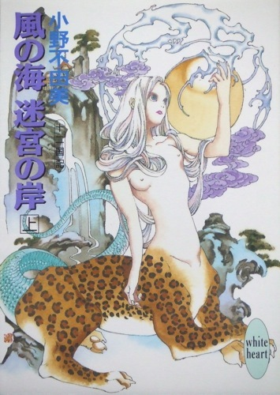
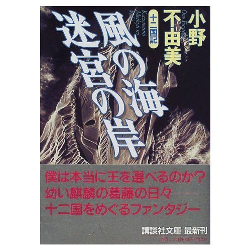

| [小野不由美] 十二国記シリーズ03 | |
| 小野不由美 | |
| (2015) | |
|
十二国記シリーズ 風の海 迷宮の岸(上)
小野不由美
|



|
風の海 迷宮の岸(上) 十二国記 |
プロローグ
雪が降っていた。
重い大きな雪片が沈むように降りしきっていた。
天を見あげれば空は白、そこに灰色の薄い影が無数ににじむ。染みいる速度で視野を横切り、目線で追うといつの間にか白い。
彼は肩に軟着陸したひとひらを見る。綿毛のような結晶が見えるほど、大きく重い雪だった。次から次へ、肩から腕へ、そうして真っ赤になった掌にとまっては、水の色に透けて溶けていく。
雪の白よりも、彼の吐息のほうが寒々しかった。子供特有の細い首をめぐらせると、動作のとおりに白く吐息が動きを見せて、それがいっそう目に寒い。
彼がそこに立ってもう一時間が過ぎた。
小さな手もむきだしの膝も、熟れたように赤くなってすでに感覚が無い。さすっても抱きこんでも冷たいばかりで、それでいつのまにかぼんやりとただ立っていた。
北の中庭だった。
狭い庭の隅には使われてなくなって久しい倉が建っている。土壁に入った亀裂が寒々しい。
三方を母屋と倉に、もう一方を土塀に囲まれていたが、風の無いただ寒いばかりのこの時には、ほとんど恩恵をもたらさなかった。
庭木と呼べるほどの樹木もない。夏が近くなればシャガの花が咲いたが、いまはむきだしの地面が白くまだらに染まっているだけだった。
（強情な子やね）
祖母は関西から嫁いできた。いまも故郷のなまりが消えない。
（泣くくらいやったら可愛げもあるのに）
（お義母さん。そんな、きつく言わなくても）
（あんたらが甘やかすし、いこじな子になるんやわ）
（でも）
（近頃の若いもんは子供のきげんを取るしあかん。子供は厳しいくらいでちょうどよろし）
（でも、お義母さん、風邪をひいたら）
（子供がこれくらいの雪で風邪なんかひくわけないわ。──ええね、正直に謝るまで、おうちの中には入れへんかららね）
彼はただ立ちつくしている。
そもそもは、洗面所の床に水をこぼしてふかなかったのは誰かという、そんな些細な問題だった。
弟は彼だと言い、彼は自分ではない、と言った。
彼にはまったく身に覚えがなかったので、そう正直に言ったまでのことだ。彼は常々祖母から、嘘をつくのはもっともいけないことだとしつけられてきたので、自分が犯人だと嘘をつくことはできなかった。
（正直に言うて謝ればすむことでしょう）
祖母が激しく言うので、彼は自分ではないとくりかえすしかなかった。
（あんたやなかったら、誰やの）
犯人を知らなかったので、知らないと答えた。そうとしか返答のしようがなかった。
（どうしてこんなに強情なんやろね）
ずっと言われつづけていることではあるし、彼は幼いなりに自分が強情なのだと納得していた。「強情」という言葉の意味を正確に知るわけではないが、自分は「強情」な子供で、だから祖母は自分を嫌いなのだと、そう納得していた。
涙が出なかったのは困惑していたからだった。
祖母は謝罪の言葉を求めているが、謝罪すれば祖母がもっとも嫌う嘘をつくことになる。どうしていいかわからなくて、彼はただ途方にくれていた。
彼の目の前には廊下が横に伸びていた。廊下の大きなガラスの向こうは茶の間の障子。半分だけガラスが入ったそこから、茶の間の中で祖母と母とが言い争いをしているのが見えた。
ふたりが喧嘩をするのはせつない。いつも必ず母が負けて、決まって風呂場の掃除に行く。そこでこっそり母が泣くのを知っていた。
──お母さん、また、泣くのかなぁ。
そんなことを考えて、ぼんやりと立っている。
少しずつ足が痺れてきた。片足に体重をのせると、膝がきしきし痛んだ。足先は感覚がない。それでも無理に動かしてみると、冷たい鋭利な痛みが走った。膝で溶けた雪が冷たい水滴になって、脛へ流れていくのがわかった。
彼が子供なりに重い溜め息をついたときだった。
ふいに首筋に風が当たった。すかすかするような冷たい風でなく、ひどく暖かい風だった。
彼はあたりを見まわした。誰かが彼をあわれんで、戸を開けてくれたのだろうと思ったからだ。
しかしながら、見まわしてみても、どの窓もぴったり閉ざされたままだった。廊下ではなく部屋に面したガラスは、さも暖かげにくもっている。
首をかしげて、もういちどあたりを見まわす。暖かな空気はいまも彼のほうに流れてきていた。
彼は倉の脇まで目をやって、それからきょとんと瞬きした。
倉と土塀の間のごくわずかの隙間から、白いものが伸びていた。
それは人の腕に見えた。二の腕の上のほうまで素肌をむきだしにした白いふっくりとした腕が、倉のかげからさしだされているのだった。
腕の主の姿は見えない。おそらく倉のかげに隠れているのだろうと、彼は思った。
ひどく不思議な気がした。
倉と塀のあいだにはほんのわずかな隙間しかない。せまい隙間に落ちこんだ野球ボールが取れなくて、弟が泣いたのは昨日のことだ。見たところ大人の腕のようだが、いったいどうやってあの隙間に入っているのだろう。
腕は肘から下を泳がせるようにして動かしていた。それが手招きしているのだと悟って、彼は足を踏みだす。凍えて痺れた膝が、音がしないのが不思議なほどぎくしゃくした。
怯える気になれなかったのは、暖かい空気がその方角から流れてくるのに気づいたからだった。
彼はほんとうに寒かったし、本当にどうしていいかわからなかったので呼ばれるままに歩いた。
雪はすでに地面をおおって、彼の小さな足跡を残すほどになっている。
白かった空は墨をぼかしたように色を変えている。
短い冬の日が暮れようとしていた。
一 章
１
命がどこからくるのか知る者はないし、ましてや人でないものならなおさらだった。
命も意識も、彼女の中に唐突に宿った。
目覚めたとき、彼女は白い枝の下にいて、頭の中にはたったひとつの言葉しかなかった。
──泰麒
身を起こす間に、その言葉は頭の中いっぱいに満ちて、あふれると同時に彼女はすべての事柄を把握していた。
自分が何者であるのか、なんのために存在するのか、なにがもっとも重要であるのか。
──泰麒。
それは半身を起こしたいまも、彼女の脳裏からあふれて身内にしたたりつづけていた。
まるでしたたっていく水滴を体の奥深いところで受けとめようとするように、彼女は起こした上体を反らした。顔を仰向け、目を閉じた。涙がこめかみに向けてすべって落ち、まだ濡れている身体の中に溶け入った。
力の入らない足を動かすと、足の先に湿った土と金色のかけらが触れた。
かけらはつい先ほどまで彼女を抱いていた殻だった。土が吸った水分は、つい先ほどまで殻の中に満たされていたものだった。彼女はほんの少し前に殻の中から孵ったのだ。彼女を抱いた金の卵は枝を離れて落下し、割れた。
彼女は卵のかけらをしばらく見やって、次いで視線を上げた。目の前には白い枝。白銀でできたかのような枝は頭上に伸びて、はるか上空で堅牢な岩盤に吸い込まれている。
枝にはいくつか、金色の果実がこぶのように実っていた。それはまだ命を宿さぬ卵なのだと、自分もついさっきまで同じようにしてそこに実っていたのだと、彼女は教えられるわけでもなく思い出していた。
命とは、そのようにして誕生するものだ。
──泰麒。
彼女は四肢に力をこめて立ちあがった。また、涙がこぼれた。
涙ははじめて外気に触れた瞳を守ろうとする反射に過ぎなかったが、彼女はその熱いほど暖かいものが滑り落ちていく感触を、たったひとつの言葉が身内をすべり落ちていく感触だと感じた。
泰麒、泰麒と呼ばわりながら、涙がこぼれる。
まっすぐに立ちあがると髪を枝にすくわれた。彼女は土を踏んだ四肢とは別の二本の腕で、それをほどいた。
「孵ったようだね」
ふいに声が聞こえて、彼女は音声のしたほうを見た。
あたりはほの暗い闇、頭上の枝ばかりが燐光を放って白い。
少し目が慣れると、そこが巨大な洞窟の中だとわかった。
巨大な──あまりに巨大な半球形の洞窟の、中央に白い枝が垂れている。実をいえば、彼女をおおいかくすようにして垂れているのは枝ではなく根だった。それは岩盤を貫いて、どれほどあるのかわからないほど高い天井の中央から、彼女の立つ足元までびっしりと細かく枝分かれしながら伸びているのだった。
ふむ、と間近で声がした。
「よい女怪だ」
彼女はもう一度声のありかを探した。
今度はたやすく見つかった。彼女の足元の、そう離れていないところに腰の曲がった老婆が立っていた。
老婆は立ちあがった彼女の、胸のあたりまでしか背丈がない。枯れ枝のような腕を背伸びするように伸ばして、老婆は彼女の濡れて背中にまとわりついた髪をなでた。
「女で」
言いながら、ついで頬をなでる。
「首は魚」
軽く腕を叩く。
「上体は人」
背中にまわされた手が軽く下の背筋を叩いた。
「下は豹。尾は蜥蜴だね。よく混じっている」
上の背筋と下の背筋の、ちょうど間のよく緊張したあたりを老婆は軽く押した。
「さ、そんなにお泣きでないよ。──おいで」
おされるままに彼女は歩いた。歩くたびに涙がこぼれて乾いた土にしみを作る。
ゆっくりと長い時間をかけて洞窟を横切り、天井の岩盤が作る曲線と足元の土が交わるあたりで階段を見つけた。
「サンシ、にしよう」
老婆がやっとつぶやいた。
「汕、子、だ。おまえは、これから汕子と呼ばれる」
彼女は黙って狭く暗い石段を上がりながら、老婆の声を聞いていた。
「姓は白だ。これは蓬山で実った女怪の定め」
大きく湾曲した石段を上っていくと、ふいに光が見えた。
「姓をたまわるのは、おまえの使命が重いからだ。それをよく覚えておおき」
彼女はうなずいた。なにが重いのか、言われなくてもわかっていた。
その重みを胸の中に刻みなおすようにしながら黙々と石段を上ると、ふいに視野が開けた。いつのまにか幅広になっていた石段の、正面にぽっかりと大きく四角の穴が空いていた。
彼女は足を止めた。
見上げる角度にあるその穴から、淡い青の抜けるように高い空と、そこに向かって伸びるまばゆいばかりに白い木が見えた。見えるのはそれだけだった。やっと止まった涙がまたあふれた。
老婆が背筋を叩いた。
「そら、おゆき」
彼女は駆け出した。生れ落ちたばかりの脚で初めて走った。
石段を上りきり、陽光の中に飛び出し、刺すような光をこぼしながらまっすぐ木に駆けよった。
彼女は根に実った。長細い根に対して、木は低く大きかった。苔むした岩盤の上、空を背景に伸びやかに枝を這った木の、白い白い枝には金の果実がひとつ実っている。
「泰麒」
初めての声が彼女の喉を越えた。
彼女を実らせた根と、ちょうど一対をなす位置にその果実はある。まだ小さく、両手で包めるほどの大きさしかなかった。陽光が乾ききらぬ鋭敏な肌を刺すのを感じながら、彼女はその実を両手で包んで頬を当てた。
涙が止まらない。
「......泰麒」
汕子はこの世に生をうけたのだ。
２
世界の中央に黄海があった。
海といっても水はない。そこで流れてゆくものは時と風ばかり、そのほかには果てのない砂漠と果てのない樹海と、あるいは一面の沼地が、あるいは一連の岩山がひろがるばかりの土地である。
その黄海の中央にひときわ高く連なる山々がある。五つの峻峰が複雑に入り組むそこを、五山といった。
中央の高い山を崇高、周囲四方に連なる山をそれぞれ蓬山、華山、霍山、恒山と呼ぶ。蓬山は旧くを泰山といったが、凶事あるたびに改名して、ここ千年ばかりは蓬山と呼び習わしている。
五山は西王母の山と言い、蓬山は王夫人の山だと言う。残る四山の主は諸説あって定かではない。その真偽はともあれ、いずれにしても五山は女神・女仙の土地だった。
五山はどれも天を突くほど高い山だが、麓に広がる黄海同様、なにがあるわけでもなかった。緑と岩と水、それだけが複雑怪奇な地形を作りながら連なるばかり、そこに途切れることなく風がただ吹きぬけてゆく。
ただ蓬山の中腹に、蓬廬宮と呼ばれる小さな宮殿がある。ここが蓬山で──ひいては五山で暮らす者たちの唯一の住処なのだった。
「......おや、罌粟が」
禎衛はつぶやいて、かがみこんだ。
泉に罌粟の花びらがいくつも浮いているのを見つけたからだ。
禎衛から二歩ほど後れて小道を歩いていた蓉可もまた足を止めた。澄んだ水の表面に、赤い花弁の色が美しかった。
「罌粟苑の花でしょうか」
蓉可の問いに、禎衛はうなずいて花びらをすくう。
「風に乗って飛んできたのだろう。──今日は妙な風が吹くね」
蓉可もまたうなずいて、頭上を見上げた。
蓬山は奇岩の山だった。特にここ蓬廬宮のある高台は、苔むした奇岩でさながら迷路の様相を呈している。
奇岩はその名にふさわしく奇妙にえぐれ、不安定にそびえ、その高さは低いものでも身の丈の三倍あまり、奇岩の間をぬうようにして通る小道は、かろうじて女がふたり肩を並べて歩けるほどしかない。
その小道の途中で足を止めて、禎衛は泉に浮かんだ罌粟の花びらを丁寧にすくった。
彼女は女仙のひとりだった。十八、九の娘に見えるが、女仙の外見を信用してはならない。いかなるいきさつでいつごろ昇仙したのか、彼女自身ももはや覚えていない。それど長い間、蓬山にいることだけは確かだった。五十人あまりいる女仙の中でも、禎衛ほど蓬山住まいが長い女仙はいない。
反対に、蓉可はもっとも新参の女仙だった。歳は十六、ごく平凡な農家の娘に生まれたが、どういうわけか世俗に馴染めず、十三の歳に昇仙の誓いをたて、五穀を断って西王母の廟に通いつづけること三年、ついさきごろ満願を成就し五山へ召し上げられた。
したがって蓉可は蓬山に住んで長いわけではけっしてない。崇高山での修行を終え、蓬廬宮に移って半月だが、その彼女にも今日の風はなにかしら奇妙に思われた。
常にはゆるやかに小道を流れていく風が、今日に限って強く速い。奇岩の上空へ吹き上げ、かと思えば奇岩にそって吹き下ろして、いたるところで渦を巻いている。空模様もなにかしらすっきりしなかった。薄曇りにもかかわらず、重苦しいものが垂れこめているような、そんなふうに感じられてならない。
「なにかの予兆でしょうか」
蓉可の問いに、禎衛は首をかしげた。
「さてね。今朝の八卦には、なにかが起こりそうな卦は出ていなかったけれど。──とにかく、水を汲んでおしまい。
「はい」
蓉可は持ってきた手桶を泉に沈めた。
泉の名前は海桐泉という。奇岩の根元をえぐるようにして湧いた泉の、その上にさしかかるように張り出した岩棚の上には海桐花の木が群生していた。
蓬廬宮にある泉は、もちろんこれひとつではない。いくつの泉があるのか数えてみた酔狂な者はいないが、名前が必要なほどの数であるのは確かである。
蓬山には季節がない。花は年中咲いて散った。いまも海桐花が小さな白い花を落として、泉の水面に泡のように浮かんでいる。水には海桐花の芳香がうつって、海桐泉の水を汲みあげつづけた桶からは、いつしか海桐花の匂いがするほどだった。
海桐花の匂いのする水は、蓬廬宮の中にある大真廟で蓬山の守り神である王夫人の木像をふき清めるのに使われる。
海桐花の花をよけながら水を汲みあげ、大真廟に向かおうと足を踏みだした蓉可を、禎衛は笑って呼び止めた。
「どこへお行きだね」
「え？ ──夫人の......」
禎衛は声をあげて笑う。
「廟はそちらにありはしないよ。まだ道を覚えておいででないかえ？」
蓉可は三方に枝分かれした小道を見比べて、少し赤くなった。
「......そのようですね」
蓬山は奇岩と無数に枝分かれした小道とで迷路のようだが、じっさいのところ迷宮にほかならなかった。
正しい道を知っているのは蓬廬宮に住む者だけだった。ここに住まう女仙だけが無数に枝分かれした道の中から正しい道を選び取り、洗濯によい小川へ、水浴によい淵へ、水汲みによい泉へと行くことができた。あるいはまた、小さいながら日当たりのよい野原へ、花園へ、菜園へ。あるいは、点在する小さな宮へたどりつくことができる。──ただし、蓉可のように蓬山に来て間がない女仙ともなれば、話は別である。
「どうしてこんな、ややこしい......」
蓉可が溜め息まじりにひとりごちたので、禎衛は笑った。
「蓬山公をお護りするためだもの。多少の不便はがまんおし」
迷路は侵入者に対する備えだった。
奇岩の上をとうてい人馬が進むことはできない。妖獣ならばそれも可能だろうが、蓬廬宮にはいくつかの例外をのぞき、妖獣が立ち入ることは許されなかった。そうして、奇岩の間をぬう小道は細い。蓬廬宮をたずねる者は乗騎を捨て、必ず歩いて入らなければならなかった。
一歩中へ入れば、道はまぎれもなく迷路である。
高い奇岩は視野を遮る。しっとりと水を含んだ苔におおわれた奇岩の、その間を通る小道には石畳が敷かれてはいるものの、無数の枝道と無数の隧道であっというまに方角を見失うことは疑いがない。
蓬廬宮を熟知するものだけが道を見失わずに、この世にただひとつしかない木の生える高台へと、たどりつくことができるのだ。
「ああ、やっぱりそうなんですね」
迷路の奥に隠されたのは捨身木、捨身木に実るのは麒麟だった。
この世では人も獣もそのほかのものも、ことごとくが白い木に実るが、麒麟が実る木はここ蓬山にある捨身木が唯一だった。
蓬山は麒麟の生まれる聖地、蓬廬宮は麒麟のために存在し、そこに住まう女仙もまた麒麟のために存在する。麒麟は蓬山の主である。ゆえに蓬山公と呼んだ。
禎衛はうなずく。
「麒麟をあずかる責任は重い。けれどこれほど幸せな仕事もない。泰果が孵ったら蓉可にもお世話を手伝ってもらう。ようく心しておおきね」
禎衛の言葉に蓉可は瞳を輝かせた。
「わたしがおてつだいできるんですか？ 本当に？」
実のところ、蓉可は少し不満だったのだ。
蓬山の女仙の務めは麒麟に仕えることで、それ以外の仕事は雑用に過ぎない。蓬山にはいま若い麒麟がいるが、蓉可はあまりに新参なのでその麒麟にかかわることを許されなかった。
禎衛は笑う。
「まず、道を覚えなくてはね」
「はい」
蓉可は大きくうなずいた。
捨身木にはつい先日、麒麟の実がひとつ、ついた。泰果と呼ばれる果実である。
蓉可は、いまはまだ小さな果実に思いをはせる。
泰果が熟して麒麟が孵るまでに十月。生まれたばかりの麒麟はどんなに愛らしいだろう。小さな麒麟のそば近くに仕えてその世話をする、それは想像しただけで楽しくてたまらないことのように思われた。
またどこからか罌粟の花びらが飛んできて、泉の水面に舞い落ちた。
３
「罌粟かえ」
突然声をかけられて、禎衛は花びらをすくう手を止めた。背後を振りかえると、海桐泉に近いことから海桐宮と呼ばれる建物からひとりの女が出てきたところだった。
蓉可は女を見やって首をかしげる。見覚えのない顔だったからだ。歳の頃はわからない。若いようでもあり、すでに中年を越えているようでもあった。着ているものも身につけている装身具も、女仙がつけるそれとは格段に違う。身分の高い女なのだとは想像がついたのだが。
「──玄君」
禎衛があわててその場に平伏し、蓉可もぎょっとしてそれに続いた。
現れたのは蓬廬宮に住まう女仙の長、天仙玉女碧霞玄君──玉葉だったのだ。
「罌粟苑の花が風に乗ってきたのでございましょう」
禎衛が述べると、玉葉は玲瓏とした面を奇岩のあいまの空へ向けた。
「妙な風の吹くことよの」
「はい」
玉葉は少しの間、柳眉をひそめるようにして空を見上げていたが、すぐに視線をおろして蓉可のほうへ向けた。
「蓉可といったか。──蓬山にはもう慣れたかえ」
蓉可は声をかけられて狼狽した。
まだ下界にいた頃、玉葉は伝説の中にしか住まないものだと思っていた。それほど隔たりのある女神なのだ。文字どおり雲の上の人に会って声までかけてもらっては、うろたえずにいることなどできない。
「は......はい」
「まだ道に迷うようですが」
禎衛が笑いぶくみに言ったので、蓉可は真っ赤になった。
玉葉は耳に快い声をあげて笑う。
「それは新参者のさだめよの。かく申す禎衛も、昔にはさんざん迷うておったほどに。じきに慣れよう」
ちらりと蓉可が禎衛に視線を向けると、禎衛は屈託なく笑っている。
「ほんに。──妾よりは、よほどものおぼえはよいようでございます。労苦をいとわず、よう働いてくれますし」
玉葉は笑んだ。
「それは、感心なこと」
蓉可はさらに赤くなってしまった。
「と、とんでもございません。まだまだ叱られることばかりで──」
「慣れるまでは、叱られるのも務めのうち。気落ちせずにな」
「──はい」
深々と頭を下げて額を地につけた蓉可を見やって玉葉は微笑う。同じく微笑んで若い女仙を見ている禎衛に視線を向けた。
「ときに、戴の女怪が孵ったとか」
「さようでございます」
玉葉は常には蓬廬宮にはいない。ふいにどこからともなく現れる。いつもはどこにいて、どこからどうやって現れるのか、禎衛は知らなかった。不思議に思わないでもないが、一介の女仙が詮索してよいことではない。
「名は？」
「汕子、と」
「その、汕子はどこじゃ？」
「捨身木の下に。いっかなはなれようといたしません」
禎衛が言うと、玉葉はふっくりした紅唇で笑った。
「いつものことながら、女怪とは情の深いものよの」
禎衛もまた笑んでうなずく。
麒麟には親がない。親の代わりを務めるのが女怪で、これは捨身木の根に実る。麒麟の実が枝につくと一夜で孵って、これから十月、麒麟が孵るまで枝の下で熟していく果実を見守りつづけるのだ。
「して、どちらと？」
女怪だけがこれから生まれる麒麟の性別を知っていた。
「泰麒だそうでございます」
「そうか」
牡は麒、牝は麟、国氏を冠して号となすのが古来からの決まりである。現在、捨身木に実っているのは戴国の麒、国氏は「泰」ゆえに「泰麒」と呼ばれる。
玉葉はひとつうなずいて、捨身木に至る道へ足を踏みだした。禎衛と蓉可がそれを見送って深く頭を下げたときだった。
突然、大気が震撼した。
逆巻く勢いで突風が小道を駆け抜けた。
声をあげるいとまもなく、禎衛はその場になぎ倒される。同じように倒れた蓉可が悲鳴を上げた。
地が鳴動する。地鳴りは奇岩にこだまして、迷宮が不気味な咆哮をあげた。
「なにが......」
蓉可の狼狽しきった声に、禎衛は答えることができなかった。
単なる嵐とも地震とも思えない。単にそれだけのことならば、必ず八卦に予言があったはずである。だいいち、単なる天変地異なら、天神女神の力によって幾重にも守護されたこの蓬山に起こるはずがない。
「玄君、宮の中へ」
とにかく長の安全をはからねばと、禎衛が石畳に爪を立ててなんとか顔を起こすと、玉葉は天を仰いで立ちつくしていた。
いつのまにか空が赤い。薄い赤い紗を幾重にもおろしたようにして、赤気がゆらめき空をおおっていた。
「蝕か......！」
玉葉は鳴動を続ける大地にはかまわず、空で踊る極光を見すえる。
あの突風に倒されずにすんだのは、さすがは女神と言うべきか。それでも禎衛には、それに感嘆する余裕などありはしなかった。
「蝕──」
大気がねじれ、のたうつように震えるのがわかる。そのたびに頭上で赤気が不穏な蠢きをくりかえした。
赤気のはざまに薄く、蜃気楼のようになにかの影が見えた。
それは海の彼方に細く広がる大地の幻影である。
「そんな──」
この世ならざる土地が、接近しようとしている。
細かく可憐な海桐花の花が、突風に散って飛礫のように禎衛を打った。
「ああ──泰果があるのに......！」
４
白い枝の下に身を伏せ、湿った苔が肌をくすぐるのを感じながら、うっとりと汕子は枝の果実に見入っていた。
泰麒の入った実は十月で熟す。
十月のあとには、あの泰果から汕子の主である麒麟が孵るのだ。熟した実をもぐその瞬間を思うと、汕子の身体は涙の温度をしたものでいっぱいになる。
嬉しく、誇らしく、あふれるような思いで光沢のある金の実を見上げていたときに、突然それは襲ってきた。
汕子には最初、なにが起こったのかわからなかった。
大気がねじれる。さかまいて壊れる。幕を引いたように赤気が空で踊り始めた。身震いするほどの恐怖を感じて、ようやく「蝕」という言葉を脳裏に探し当てた。
とっさに立ち上がった汕子の足を突風がすくう。風にはけっしてそよがぬはずの白い枝が、音をたてて揺れた。
悲鳴を上げて汕子は枝にすがった。枝をつかみ、風に逆らって身を起こすと、吹き散らされて枝にからめとられた髪がむしられていく。そんな痛みに気をとられる余裕はない。守らなければ、と切迫した思いで見上げた視線の先で空気がよじれる。
「......泰麒！」
吹き寄せた音が身体を叩いた。ねじれてひずんだ大気がさらに歪み、歪みが枝を呑みこむのが見えた。
「やめて......！」
金の小さな実がひずみに呑みこまれる。十月さき、汕子が己の手でもぐまでは、けっして枝を離れるはずのない実が、枝からねじ切られていくのが見えた。
「誰か！」
枝に掻き切られて血だらけになった腕が実を追う。指先と金の実の間の距離は絶望的なまでに遠かった。
「誰か、止めて──！」
汕子の叫びは、全霊を託して伸ばされた指の先で断ち切られた。
金の実はその姿を歪みの中に沈めて消えた。
この世に生まれ、泰麒と呼んだ、そのほかに発した初めての声は悲鳴だった。虚しいばかりの叫びだったのである。
始まったときと同じく、唐突にそれは終わった。
汕子は呆然と白い枝を見上げた。
そこにはもう金の光は見えなかった。たったひとつあった果実は、消えうせていた。
「汕子......！」
声が四方から響いて、多くの女仙が駆けてくるのが見えた。まっさきに汕子のそばにたどりついたのは玉葉だった。
「ああ......汕子......」
汕子は差し出された彼女のたおやかな手にすがりついた。
最初に名を。次いで、悲鳴と叫びを。その次に汕子の喉が発したのは号泣だった。
「なんということ」
玉葉は孵ったばかりの女怪を抱きしめる。無残に散った髪をなで、傷だらけになった身体をなでた。
「よりによって、麒麟が実ったときに」
腕の中の女怪は絶叫している。ともすれば十月のほとんどを木の下ですごすほど、女怪の麒麟に対する思いは深い。それを目の前で失った痛みは、玉葉の想像に余った。
「大事はない」
女怪の背を叩いた。
「そのように泣くでない、汕子。......必ず泰麒は探し出してみしょう」
つぶやきながら、己に言い聞かせる。
「できるだけ早うに、そなたの手に泰麒を戻してやろうほどに」
「玄君......」
声をかけてきた禎衛にうなずく。
「諸国に朱雀を飛ばし、至急に蝕の方角を調べさせよ」
「かしこまりまして」
「月の出までに、ぞえ。女仙を集めて門を開く用意をさせよ」
「はい。ただいま」
女仙が方々に散っていく。玉葉は虚しく視線を上げた。
何度見わたしても、白い枝に金の果実は見出せなかった。
蝕は黄海の西に起こって、東の方角へ駆け抜けていったとわかった。
不可思議な力に守られた五山の、さらに守護のあつい蓬廬宮の花は一花も残さずに散った。蝕が通過した諸国からは甚大な被害が報告されたが、蓬山の女仙にとってはそれは心を動かされることではない。彼女たちにとって、重要なことは麒麟のことでしかありえないのだった。
──問題は、蝕の歪みの中に呑みこまれた果実が、どこへ行ってしまったのかということだった。
蝕はこの世と、この世ならざる世界をつなぐ。この世の外を蓬莱といい、崑崙といった。一方は世界の果てに、もう一方は世界の影に位置すると伝えられる。
その真偽はともかく、それは人には行くことものぞき見ることもできない異境である。蝕と、月の呪力を使って開く呉剛の門だけがそのふたつの世界をつなぐことができた。
世界は虚海と呼ばれる海にとりまかれている。東へ抜けた蝕なら、泰果は虚海を渡って世界の果て──蓬莱に流れていったのだろう。
人には渡れぬ世界だが、女仙は単なる人ではない。玉葉の指示のもと、多くの女仙が虚海に開いた門を越えて泰果を探しにいったが、泰果の行方は杳として知れなかった。
──麒麟は、失われてしまったのだ。
その日から長く、蓬山の東、虚海の東をさまよう汕子の姿が目撃された。
二 章
１
蓉可は珍珠花の隧道を抜けたところで、汕子に出会った。
隧道を抜けたところにある小さな丸い広場は、柔らかな緑の草におおわれている。周囲の奇岩の斜面には、しがみつくようにして珍珠花が生えていた。ちょうど隧道の上に生えた一株は、白い花の枝を簾のように丸い出口にさしかけている。
その花の簾をそっとかき分けたところで、蓉可は斜面を下ってくる汕子を見つけたのだ。
蓉可は海桐泉の水が入った桶を足元に置く。
人馬には通えぬ奇岩の上を、女怪は軽々と駆けていく。斜面の上から汕子が下りてくることに不思議はないが、肝心の汕子の姿を見るのが久方ぶりだった。
「──汕子、お帰り」
女怪は迷路を越えて東の方角へさまよい出る。一旦出ると、長いときにはひと月ほども帰ってこないのが常だった。
なにが目的の旅なのかは、蓬廬宮の女仙のすべてが知っている。倦むほどさまよってから、女怪は疲れはてた顔で帰ってくるのだった。
「ちょうどいい。水を汲んできたところ、そこにお座りなさいな」
蓉可が言うと、汕子はおとなしく豹の脚を折って、珍珠花の下に真っ白な身体を休めた。
「今度は長かったね。黄海の果てまで行っていた？」
できることなら黄海をとりまく金剛山も越えて、さらに東へ行きたいだろうが、どんな生き物も金剛山を越えることはできない。いかなるしくみでか、そのように定められていた。
「ほら、おあがり」
桶を口もとにあてがってやると、汕子はおとなしく縁に口をつけた。
ひとしきり飲むと顔を上げたので、桶をおろして袖から出した布を水に浸した。軽くしぼって、脚にあててやる。支えた手にもその脚が熱をもっているのがわかった。
「ああ、こんなに腫らして」
布で爪先をくるむようにしてやると、汕子は真円の目を閉じる。首を珍珠花の茂みに軽くもたせかけるようにして、その重みで雪のように花が散った。
ここにあった珍珠花はかつて一度根こそぎ折れた。ただの一本でさえ残らなかった。
──もう十年も前の話である。
「気持ちいい？ あまり遠出をしないのよ」
汕子は答えなかったが、それはいつものことなので蓉可も気にとめなかった。
大きな蝕があった。さすがに五山では地形が変わることはなかったものの、五山の外では地勢が一変した。──そうして白い木の果実はもぎとられた。
女怪は悲鳴をあげ、号泣し、それ以後汕子の声を聞いたものはいない。
蓉可は四本の脚をていねいに冷やしながらぬぐってやった。
「まだ痛むでしょう。川へ行って冷やしてらっしゃい」
言って、すっかりぬるくなった水をその場にこぼすと、汕子は立ち上がって歩き出した。
汕子がとぼとぼと歩き出した枝道の方角には川はない。彼女は白い木の根元へ戻るのだ。蓉可にはそれがわかったが、あえて呼び止めたりはしなかった。
蓉可には汕子の気持ちがわかるのだ。
麒麟の木に小さな実がついて、それが孵ったら世話を手伝わせてやろうと言われた。
下界では人が麒麟に会うことはめったにない。昇仙して蓬山に召し上げられて、初めて蓉可に与えられる責任のある仕事になるはずだったし、生まれて初めて間近に見る麒麟になるはずだった。
その果実は流されて、麒麟のために用意された蓉可の両手は宙に浮いた。汕子が養う相手を失って乳房を──人の形をした上体の胸には少女のように微かなふくらみしかない。それは豹の形をした下肢のほうにあった──腫らしていたように、蓉可の中にもまた、行き場を失って疼くものが残された。
果実が流れて十年。どの女仙も、もう泰麒が帰ってくることはあるまい、と言う。きっとそのうち新しい泰果が捨身木に実る。それは失われた麒麟が異界で死んだことを意味するのだと、そう言うのだ。
それでも諦めきれなかった。汕子がいまも東の方角へさまよい出るように、蓉可もまた、泰麒のためになにかをすることをやめられない。無事を祈りつづけ、細々とした品を用意し、少しでも役に立てるよう麒麟についてできる限りのことを学ぶ。そうせずにはいられないから、汕子の気持ちは痛いほどわかるし、汕子もまた女仙とは深くかかわろうとしないなかで、蓉可にだけは馴染んでくれた。
足をひきずるようにして去った白い背を見送って、蓉可は桶を抱えあげた。
水を汲みなおそうと踵を返したときだった。珍珠花の簾が動いて、隧道から女仙のひとりが顔を出した。
「こちらに汕子がこなかったかえ」
蓉可は、たったいま汕子が曲がっていった枝道のほうを見やった。すでに汕子の姿は見えない。
「木のほうへ行ったけれど」
「大急ぎで追いかけておくれでないか」
「あたしは、水を」
「玄君のお召しだ」
蓉可は目を見開いた。
「どうやら泰果の行方がわかった」
２
蓉可は汕子を追いかけ、玉葉が待つ白亀宮へ急がせた。
蓬廬宮の建物は、どれもみな四阿か、さもなければ庵のようなたたずまいをしている。風なら岩が防いでくれる。もともと気候のよい山、熱さ寒さには縁がない。ただ雨露がしのげればよかった。
蓉可は小道を走り、白い石の階を五段ばかり上がり、同じく白い石を敷いた宮の床に踏み込んだ。ちょうど禎衛もまた宮の中に駆けこんできたところだった。
「汕子を連れてまいりました」
蓉可はその広い八角形の床の上に平伏する。椅子に座り、背後の手すりにもたれていた玉葉はうなずいた。
蓉可のかたわらに平伏した禎衛が顔を上げる。
「おそれながら、泰果が見つかったとか」
「雁の麒麟がみつけてくりゃった」
「では、本当に泰麒がみつかったのでございますか」
それは奇蹟に近いことだ。蓬山のどの女仙もが、もう諦めていた。蓬山の歴史の中では、十年も経って帰ってきた麒麟の例などありはしない。過去、蓬莱に流された麒麟がないではないが、どんなに長くともその半分以下で見つかっている。十年という歳月は禎衛を驚かせるに足るほど破格の数字だった。
玉葉はおっとりと微笑う。
「おそらく。......いったんあちらへ渡って、胎果となれば姿形が変わるが、麒麟には麒麟の気配が見えるという。それで諸国の麒麟に折につけ、虚海を渡って泰麒を探すようお願いしておいたが、今日、ようやく返答があった」
蝕に流された果実は、異国において女の胎にたどりつく。それを胎果と称した。
「延台輔からでございますか」
玉葉は瑠璃を削がせて作った扇を口もとにかざして笑う。
「延台輔はしばしば虚海を渡っている様子。見つけてくださるなら延台輔であろうと思うたが、やはりそうじゃったの」
麒麟がしばしば遠出をするのは誉められたことではないが、この先つよく咎めるわけにもいかないだろう。
「蓬莱に麒麟を見つけたという。いまのところ、所在のあきらかでない麒麟は泰麒だけゆえ、泰麒にちがいないであろ」
「......はい」
それでは本当に麒麟が帰ってくるのだ。
「では、さっそく女仙を集めて──」
言いさした禎衛を玉葉は制した。
「よい」
「ですが」
玉葉は首を振って、禎衛と蓉可の背後に呆然と立っている汕子に向き直った。扇を卓の上において、まっすぐ両手を伸ばす。
「......汕子。ここへ」
汕子はのろのろと玉葉の間近へ歩いていく。
「必ず見つけてみしょうと言うたは、嘘ではなかったろう？」
玉葉は汕子の手を取った。
「少しばかり遅うなったが、許してたも」
言って汕子の手を叩く。
「捨身木の根元に扉がある。行って、今度こそこの手でもいで来や」
汕子の真円の目にみるみる涙が浮かんだが、彼女は泣かなかった。そくざに身をひるがえすとそのまま駆けていった。
玉葉は疾走してゆく白い女怪を目を細めて見守る。白亀宮を飛びだした汕子が小道を曲がるのを見届けてから、禎衛に向かってはれやかに笑った。
「やっと蓬山に祭りの季節がきますぞえ」
汕子は走った。生まれてこのかた、ねぐらと定めた木の根元に走ると、太い幹のかたわらにひとりの若い女が立って、その足元を示していた。そこには丸く白い光のさしている場所がある。
すでに女仙が集まっていた。見守る彼女たちには一瞥もくれず、汕子はまっすぐ女のもとにかけよった。
捨身木は崖の上、巨大な一枚岩の上に立っている。ずっしりと苔むした岩の、ちょうど木の根元から一歩ほどの場所に、女は立っていた。
足元には銀の輪が落ちている。近づいてみれば、それは単なる輪ではなく、一匹の蛇だった。白銀の鱗を持ったふたつ尾の蛇が丸くなって、一方の尾をくわえて円を作っていたのだ。
蛇の作った円の中は薄く輝いている。ちょうど丸い光が降り注いでいるようにも、苔の下から光がさしているようにも見えた。
汕子が足を止めると、彼女は微笑って優美な右手を差し出した。彼女の左手の指には蛇の一方の尾が巻きついている。
「汕子、ですね」
汕子は彼女を見、蛇が作った光の輪をのぞきこむ。両手を広げたほどの輪の、向こうは白い闇だった。淡い光の隧道が続いた底に、ぽっかりと丸い穴が空いていた。穴に切り取られた風景の中に見えるのは、見慣れない様式の建物と、庭らしき空間と、金の丸い光だけだったが、汕子にはそれで充分だった。
──泰麒。
なにを誤っても、あの光が泰麒か否かを誤ったりはしない。
「お入りなさい。ただし、私の手をけっして放さないでくださいまし」
そういった女は、汕子の知る顔ではなかったが、いまはどうでもいいことだった。
彼女の手を握り、汕子は光の中に踏みこむ。冷え冷えとした空気が吹きあげてきていた。隧道の出口には珍珠花の花弁が舞い散るようにして、白い冷たい花が吹きこんでいる。
光の中に最後の足までが踏みこむと、ふんわりと浮き上がる気配があって、天地の感覚が消滅した。宙を漂うようにして隧道の出口へ向かって一歩を踏み出した汕子の背後に、女が続いて下りてくる。
「さあ。進めるところまで進んでごらんなさい」
言われ、汕子は歩き始める。出口へ向かって、汕子が進めるぎりぎりの縁まで歩んでから、腕を伸ばした。
いまや視界いっぱいにひろがった風景は、白い冷たい花の舞う墨色の空気の中に金の丸い光が浮かんでいる、ただそれだけの光景だった。
光はよく見れば小さな子供の姿をしているようにも思われたが、汕子の目には、それがひとつの果実のように映った。本当なら十年も前に汕子が白い枝からもいだはずの果実。腕に抱えるほどの大きさがあって、つややかな金の色をしている──。
汕子の指はせいいっぱいに伸ばしても、金の果実に届かない。女の手を握る指に力をこめ、上体を伸ばし、手探りをし、冷たい空気をかきわけ果実をさし招くようにすると、果実のほうから汕子の手の届くあたりへ漂ってきた。
──どれほどこの瞬間を夢見たろう。
汕子は指先に触れたその果実をしっかりとつかまえた。
手元に引きよせると、その実は難なく、汕子の腕の中にもがれて落ちた。
３
彼が白い手の、すぐ間近へ歩いていくと、白い手は迷わずに彼の手首を握った。
冷えた肌に、その手の感触はひどく暖かかった。
倉と土塀の間のせまい隙間にどうやって人が隠れているのか、それを確かめたかったはずなのに、間近までいった瞬間、あたりの風景が定かではなくなった。ちょうど瞳を水の膜がおおいでもしたように、風景が潤んでにじみ、ものの輪郭が消え失せた。
思わず手探りをするように伸ばした腕の手首をつかまれ、すると急に身体が浮きあがる感触があって、するりとどこかに引き込まれた。
引き込まれた先は白い空間だった。色のないもやのようなものが濃くたちこめていて、どんな場所だか判然としなかったが、彼はなんとなくそこをふわふわした球形の場所のように感じた。
そこはいっそう暖かく、さらに暖かい風がどこからか流れてきていた。
足元には硬い床の感触がなかった。かといって柔らかなものを踏んで足をとられる感じもしない。雲の上に立つとこんな感じがするかしら、と彼は思う。
すぐ近くに人の気配がして誰かがしっかりと彼の手を捕らえていたが、その姿は見えなかった。もやの中にちらちらと乳白色の影が動いているようにも思えたけれど、気のせいだったかもしれなかった。
少しの間ぽかんとしていると、彼の手首を握った手が彼を引いた。不思議に怖い感じはしなかったので、おとなしく手を引かれるにまかせる。
ごく短い廊下を歩くほどの間、ふわふわと引かれて、やがて水面に顔を出すようにして、ぽかりともやの外に出た。
突然陽光にさらされて、彼はしばらくきょとんとしていた。
目の前にあったのは、見たこともない木の真っ白な幹だった。それはまるで純白の金属でできたように見えた。幹は太く、それでもさほどに高くなく、やはり白い枝は大きく横に伸びて、先端で垂れるようにしなっている。
その枝の向こうには奇妙な風景が見えた。緑色をした変わった形の岩が連なる様子。遠巻きに集まった、見慣れない格好の女たち。
そうして、なかでもいちばん奇妙だったのは、彼の手を握った女の姿だった。
女は半分が人で、半分が虎か豹のように見えた。顔は妙にのっぺりとして、そこに真円の目が表現のしようのない色をたたえて開いている。怯えてもいいはずだが、不思議に怖いとは思わなかった。それよりむしろ、優しい目だとそう思った。
「......タイキ」
半獣の女はそういったが、それがなにを意味する言葉なのか、彼にはよくわからなかったし、ましてやそれが彼女が十年ぶりに発した言葉であることなど、わかるはずがなかった。
「泰麒」
彼女の柔らかな手が髪をなでて、同時に丸い目から澄んだ涙がこぼれた。
彼はなんとなく、いつも母親にするように手を握ってその顔をのぞきこんだ。
「かなしいことがあったの？」
彼が言うと、彼女は首を横に振った。いいえ、と否定するよりは、気にしなくていいのよ、と言いたげなその仕草が母親のそれによく似ていた。
「......泰麒？ その子が？」
声が聞こえて、彼はようやく木の周囲で奇妙なざわめきが起こっていることに気がついた。どうしたのだろう、と思っていると、ひとりの女が近づいてくる。
「......珍しいこと」
「だれ？」
女は彼の前に膝をついた。
「わたしは玉葉と申す。......こんな髪を見たのは何百年ぶりかの」
女は彼の髪を梳いた。
「黒麒だ。ほんに、珍しいこと」
「なにか、おかしい？」
彼は目の前の女にではなく、かたわらに立って彼の手を握っている半人半獣の女のほうを見上げた。すでに彼の中で、こちらの女のほうが自分のたよるべき存在なのだと、そうなんとなく理解されていた。
彼女はもう一度、無言で首を横に振った。
「もちろん、おかしくはないとも。めでたいことじゃ」
目の前の女は言う。
「あちらで生まれたのなら名前があろうが、ここでは泰麒とお呼びする」
「泰麒？ どうしてですか」
「それが決まりだから、かの」
「ここは、どこなんですか？ ぼくは庭にいたはずなんですけど」
彼は、異常なことが起こったのだと理解できないほどに小さくなかったが、それによってひどく動揺するほどには大きくなかった。
「ここは蓬山。泰麒のあるべき場所」
「よく......わかりません」
「いずれおわかりになろう。──これは、汕子。白汕子という。あなたのお世話を申しあげる」
彼はかたわらの女を見上げた。
「汕子......」
さらに玉葉は、視線を脇へ向けた。
「そちらは、廉台輔」
白い木の幹のそばに、金の髪の女が立っていた。彼が玉葉の視線を追って彼女のほうを見たとき、ちょうど白い蛇がするすると腕に巻きついて、銀の腕輪に変じたところだった。蛇にはふたつめの尾があって、それが腕輪に銀の鎖でつながった指輪に変じたようにも見えたが、驚いていたので確かなこととはいえない。
「お礼を申されよ。泰麒のお迎えに汕子をつかわすため、貴重な宝をお貸しくだされたのだから」
彼はやんわりと微笑む女を見上げ、さらに汕子に目をやった。汕子がうなずいたので、いわれるままに頭を下げた。
「ありがとうございました」
彼女はただ微笑う。それを満足そうに見やって唐突に玉葉が立ちあがった。踵を返し、去っていこうとする。
「あの、玉葉......さん」
「泰麒。さま、と」
彼は汕子を見上げた。
「......さま、とお呼びするのです」
彼はうなずいた。汕子の言葉は不思議に戸惑いを生まなかった。泰麒、と耳なれない言葉で呼ばれても、汕子の口から出ると、自分の呼び名だとあっさり納得できた。
「玉葉さま。......いろんなことがとても不思議な気がするんですけど」
彼には自分の困惑を、うまく表現することができなかった。
玉葉はただ笑った。
「じきに慣れようほどに、おいおい汕子に聞かれるがよかろう」
彼は汕子を見上げた。汕子は微笑んだ。──表情のとぼしい顔だから、さだかではないが、たしかに微笑んだのだと感じた。
「はい」
彼が汕子の手を強く握ると、それ以上に強い力で答えがあった。
４
「──汕子、汕子。その子をようく見せておくれ」
「こちらへおいでなさい、泰麒。衣をしんぜましょう」
「衣より水を。それより桃がよろしいか」
「李でも梨でも」
玉葉が腕輪の女をともなってその場を去るなり、女仙女仙にとりかこまれて泰麒は困惑してしまった。
女仙たちの笑顔を見れば歓迎されているらしいとはわかるのだが、なにしろ状況が普通でない。汕子の手を堅く握って、腕にすりよるようにする、どっと女仙がはやしたてた。
「あれ、そのように汕子ばかりにつかずとも」
「汕子も独り占めおしでない」
「泰麒、こちらにいらっしゃいませ」
見かねて禎衛は女仙たちに声をかけた。
「そのように浮ついては、泰麒もお困りでしょう。しばらくつつしんで、汕子にまかせておやりなさい」
言って禎衛はかたわらに立った蓉可を振りかえる。
「宮にお連れおし。露茜宮がよいだろう」
禎衛は、この若い女仙が泰麒のためにずっとその宮の準備をしていたことを知っていた。蓉可は感極まった様子で禎衛を見返し、それから深くうなずいた。
蓉可はそろそろと子供の前にすすんだ。膝をついて目線の高さを合わせる。泰麒の顔をのぞきこんだ。
「......よくお帰りくださいました。心からおよろこび申しあげます」
泰麒は守るように自分の肩にまわされた汕子の腕がほどけるのを感じた。やんわりと押しだされて、膝をついた女に対峙する。
「あなたは、誰ですか？」
「蓉可と申します」
「蓉可さまは......」
言いさしたとたんに、周囲の女たちがどっと笑った。蓉可もまた笑みを浮かべた。
「蓉可、とお呼びください。さま、と泰麒がお呼びになるのは、玄君だけでよろしいのですよ」
「玄君？」
「玉葉さまでございます」
泰麒が汕子を仰ぎ見ると、汕子はうなずいた。それで泰麒も納得した。
「じゃあ、蓉可。──蓉可はどういう人なんですか？どうしてぼくは、帰ってきたことになるんですか？」
「わたくしはこの蓬山に住む女仙でございます。そして泰麒は、この蓬山の主。泰麒はここでお生まれになったのですよ」
泰麒は目を見開いた。しばらく蓉可を見つめた。しばらく蓉可を見つめた。
「......ここで生まれた......？」
「はい」
蓉可はうなずく。
「いわば、ここが泰麒のご実家でございます」
「でも......」
言いさした泰麒を、蓉可は首を振ってとどめた。
「泰麒はずっと行方知れずでいらっしゃいました。天変地異にまきこまれて、異国に流されておしまいだったのです。本当に......お探しもうしあげました」
そういう蓉可は嬉しいような、せつないような表情をしていた。
「どこでどうしていらっしゃるのか、長い間心配もうしあげておりました。やっとお帰りいただけて、こんなに嬉しいことはございません。本当に、よくお戻りくださいました」
泰麒はただ蓉可の顔を見返した。
それでは自分は、うちの子ではなかったのだ、と思った。
思ったとたんに、それはすんななりと胸の中にとけこんだ。
祖母が自分を嫌うわけも、自分がどこか変で、そのせいで周囲となにかしらぎくしゃくしてしまうわけも、その一言でぜんぶ説明がついた気がした。
実際のところ、彼は家族とうまくやっていくことのできない子供だった。彼自身はうまくやっていきたいと願っていたし、そのように行動しているつもりだったのだが、それでも彼と家族の間にはどうしても埋められない溝が存在した。
同じ年頃の子供がよく考えるように、彼もまた自分は異分子なのかもしれない、と思うことがよくあった。──そして、それはやはり真実だったのだ。
「......もしかして、汕子がぼくの本当のお母さんなの？」
汕子と蓉可を見比べたが、ふたりはともに首を横に振った。
「汕子は泰麒の僕です。泰麒のお世話をもうしあげるためにいるのでございます。わたくしは単なる女仙、泰麒にお気持ちよく暮らしていただけるよう、雑用をいたしますのが務めなのです」
「じゃあ、ぼくの本当のお母さんはどこにいるんですか......？」
蓉可は頭上の枝を見上げた。
「泰麒はこの木になった実からお生まれになりました。天帝がお恵みくださったのですよ」
泰麒は白い木を見あげた。白銀の枝には果実はもちろん、花も葉も見えない。彼はまだ生命の誕生についてよくは知らない。それで蓉可のその言葉には、さしたる抵抗を感じなかった。
きっと──と、泰麒は思った──季節になれば、この枝いっぱいに赤い実がなるのだろう。たぶん大きな実で、それをぽんと割ると、その中に自分が入っていたのだ。
それはどこか奇妙な生まれ方であるようにも思われたが、彼は自分がある種の異端であることをなんとはなしに感じとっていたので、それは生まれのせいなのだと納得することができた。
（それで、だったんだ）
自分はもらわれてきた子だったから、祖母に嫌われ母の迷惑になっていたのだ。
木の実から生まれたので、どうしても祖母や両親が喜ぶようにふるまうことができなかったのだ。
──そうして、本当の両親はいない。どんな事情があるのかはわからないが、自分にはそもそも親がないのだ。
その思考はするすると胸の内にすべりこんできて、そもそもあった確信のようにそこに宿った。嘘だとは思えなかった。なにかのまちがいだとも、思えなかった。ただ──、ひどくせつない気分がした。
「......どうなさいました？」
蓉可が聞いてきたので、唇をひきむすんで首を振った。汕子がいたわるように腕をまわしてきたので、せいいっぱいの力で汕子の身体にしがみついた。
──わかってしまった。
（ぼくはうちの子じゃなかったんだ）
たくさんの記憶の断片が脳裏をよぎっていった。
怒らせてばかりいた祖母。父親の叱責。彼はどうしても、ふたりの期待にこたえることができなかった。母親は彼のことで祖母や父親と言い争うことが絶えず、弟は自分が叱られるのは彼のせいだと、そう言って怒った。
──困るんです、と若い教師は言った。
（少しもクラスに馴染んでくれないので、困っているんです）
彼女は彼を途方にくれた目で見た。
（やはりこの年頃で、友達がひとりもいないのは問題があると思うんです）
祖母は皺の深い口もとを歪める。
（どうしてお友達を作らへんの）
（お義母さん、ちがうんです。この子は仲間外れになってるんです）
（そんなん、本人の気性に問題があるからやわ。どうしてちゃんと、お友達とうまくやっていくことがでけへんの）
（お兄ちゃんは弱虫だから、仲間に入れてもらえないんだよ）
（あんたは黙っとき。あんたはあんたで、弱いものいじめばっかり。母親がしっかりせえへんし、うちの子はふたりしてこんなんなんやわ。まともに子供を育てられへんの）
（お義母さん、でも──）
祖母の叱責は結局いつも、母親を責めて終わる。そうして母親はひとりで泣くのだ。
（どうしておまえは、そうなんだ）
父親に溜め息をつかれて、なんと返答すればよかったろう。
（お祖母ちゃんに叱られずにすむよう、もう少ししっかりできないのか）
──ごめんなさい。と詫びる以外に返す言葉がなかった。
（お兄ちゃんのせいで、またぼくまで怒られたじゃないか。お兄ちゃんが祖母ちゃんを怒らせてばっかりいるから、ぼくまでいっつも迷惑してる）
──ごめん、と謝るばかりで。
彼なりに努力してみても、少しも結果は変わらなかった。
どうしてうまくいかないのか、彼にはわからなかった。自分の存在が家族全部に不快な思いをさせているように思えてならなかった。彼さえいなければ、家族は円満でいられるのではないか、そんな気が常にしていた。
（本当にそうだったんだ）
自分という異分子がいたから。
（ぼくは、うちにいてはいけなかったんだ）
振りかえるとそこは、暖かいばかりの場所であった気がした。父親が、母親が恋しかった。祖母が弟が懐かしかった。
彼がもう少しがんばれば、なにもかにもがうまくいって、誰も怒ったり泣いたりせずにいられたのではないかと思えるのに。
（でももう、ぼくは二度とうちには帰れない）
涙がこぼれた。
それは郷愁ではなく、愛惜だった。
彼はすでに、別離を受け入れてしまっていた。
三 章
１
「お目覚めですか......？」
汕子の声がして、泰麒は目を擦った。きょとんと目を開けて、しばらく横になったまま天井をながめた。
白い石の天井だった。乳白色の石にはびっしりとなにかの図案が彫りこまれている。四隅には鳥の彫刻が見え、草や花が複雑にからみあいながら、天井の中央にある丸い図案を囲んでいる。色は塗ってなかったが、代わりに様々な色をした石がはめこんであった。
「あの鳥はなんていう鳥？」
指を伸ばして四方にとまった鳥を指さした。
「さあ......」
困ったような声に、ふうん、とつぶやく。本当を言えば、鳥の名前が知りたいわけではなかった。昨日、もう大きくなったのにたくさん泣いたのを思い出したので、少しきまりが悪かっただけだ。
「いま、何時？」
思いきって、汕子の声がしたほうを見た。小さな部屋──といっても、彼の勉強部屋よりも少し小さいに過ぎない──の、床いっぱいに薄いきれいな柄の布団がしきつめてあって、三方の壁ぞいにクッションとも枕ともつかないものが並べられている。白い石でできた壁の上半分には、小さな石をはめこんで、なにかの樹木が描かれていた。
一方だけは壁がない。代わりに布が幾重にも下がっている。布はいまたくし上げてあって、ちょうどそこに汕子の姿があった。
汕子は困ったように首を傾けた。
「ぼくは、これからどうすればいいんですか？学校に行かなくてもいいの？」
泰麒はもう、自分の生活が大きく変わってしまったのだと理解している。目覚ましで起きて、服に着替えて、顔を洗って朝食を食べて学校に出ていくような、そういう生活でないことだけは確かだと直感していた。
「なにをすればいいの？」
「なにも」
そう言って汕子は首を振った。
「お起きになりますか？」
そう聞かれるところをみると、このまま寝ていても起きても、どちらでもかまわないらしい。それがここしばらくの間だけに許された特別な状態なのか、それともこの状態がずっと続くのか、それは判然としないにしろ。
「起きます」
泰麒は小部屋の奥のほうに横たわっていた身体を起こした。
汕子が立ち上がって、それでこの小部屋が床から一段高くなっているのだとわかった。カーテンの向こうには、透かし彫りをした細い扉が何枚も並んでいる。開いている部分から、その向こうに別の部屋があるのが見えた。
泰麒は興味深く自分のいる小部屋と、向こうに見える部屋を検分する。昨日は木の下で恥ずかしいくらい泣いて、そのまま眠ってしまった。それで自分が運びこまれた部屋がどういう部屋なのか、少しもわかっていなかったのだ。
この小部屋はとても落ち着ける場所だと思った。向こうに見える部屋も、気持ちのよさそうな部屋だ。向こうの部屋には壁がないようだったが、代わりに白い石の手すりがあって、その外、手を伸ばせば届くほどの距離に、苔におおわれた岩が壁のように迫っている。岩壁と建物の隙間から入った光が、表面の苔をつややかに輝かせていた。岩壁にしがみつくようにして生えた草や小さな木が、部屋の中にまで入りこんでいるのが面白かった。
汕子が水差しと桶を持って小部屋の中に戻ってきた。一段低くなった部分の、片隅にあるテーブルに桶を置いて泰麒を呼ぶ。ころころと布団の上を転がるようにして、汕子のそばによった。
「おはようございます」
言うと、汕子はただ微笑って泰麒に布団の端に腰掛けるよう、示した。おとなしく腰を下ろす。自分が裸なのに気づいたけれど、特に気にしなかった。汕子も蓉可もそのほかの女たちも、泰麒が知るいかなる服とも違う服を着ていたので、ここでは前のような格好はできないのだろうと、そう思った。
裸でも寒くない。かといって暑いわけでもない。ここはちょうどいま、気持ちのいい季節なのだろう。
汕子が少し変わったやりかたで、洗面をさせてくれた。うんと小さな子供になったようで恥ずかしかったが、されるままになっていた。桶を持って出ていった汕子は、こんどは服を抱えて戻ってきた。それは、祖母が着る着物に少しだけ似ていると思った。
服を着せてくれる間も、汕子はずっと無言だった。汕子は無口なのだと、そう思ったがべつに気づまりな感じはしない。服を着せられ、手を引かれて隣の部屋へ行くと、部屋の中央には朝食ののせられたテーブルがあって、蓉可がそのそばに立っていた。
「おはようございます。蓉可」
声をかけると、蓉可は嬉しそうに笑う。
「おはようございます。よくお休みになれましたか？」
「はい。──蓉可が朝ご飯を作ってくれたんですか？」
「いいえ。お食事を用意するのは、そういう役目の者がするのですよ」
泰麒はきょとんとする。
「ひょっとして、お掃除をするのも、そういう役目の人がいるんですか？」
「さようでございます。──さ、冷めないうちにお食事をなさいませ」
まるでお金持ちの家の子になったようだと思った。実際にそういう子を知るわけではないのだけれど。
蓉可に白く長い箸を渡されて、それを手に取った。
見慣れない料理を見わたして、それから蓉可と汕子を見比べる。
「蓉可と汕子は食べないんですか？」
「汕子は食事をいたしません。わたくしは、先にすませました」
「でも、ぼくひとりでこんなに食べられません」
テーブルの上には大小いくつもの皿が並んでいる。
「お残しになって、かまわないのですよ」
「ひょっとして、ぼくが寝坊をしたのでみんなご飯をすませてしまったんでしょうか」
蓉可は笑う。
「汕子は食事をしないのです。そういう生き物ですから。たとえ食事をしても、泰麒にお相伴できる身分ではありません」
泰麒は首をかしげた。身分、という言葉は知っているが、納得するのが難しい言葉であったからだ。
「一緒にご飯を食べられないんですか？ 寝坊しなくても？」
「さようです」
泰麒は困りきってテーブルを見つめた。
「......どうなさいましたか？」
「ここではそうするのが、あたりまえならしかたないんですけど......」
「はい？」
泰麒はそばにひかえた蓉可を見上げる。
「そういの、ぼくは少し変な感じがするんです。......ええと」
首をひねって、言葉を探した。
「寝坊した罰で、ひとりでご飯を食べるのなら、我慢できるんですけど。そうじゃなくて、それなのにひとりでご飯を食べるのは変な感じです。きっと一緒に食べたほうがおいしいと思うんです」
まあ、とつぶやいて、蓉可は声を立てて笑った。心得たようにうなずいて、部屋の一方にある衝立の向こうに声をかける。どうやらその向こうにも部屋があるらしかった。
「──手を休めてこちらにいらっしゃいませ。泰麒が朝餉にお招きくださるそうです」
２
朝食のあと、蓉可は外を案内してくれた。
汕子の手を握って建物の外に出る。泰麒はそこで少しの間、きょとんとしていた。建物にはまったく外壁がない。出入り口にも衝立が立ててあるだけ、扉も戸もなかった。三段ばかりの石段が小道に向かって下りていて、庭もなければ門もない。かろうじて石段の前は少しだけ広くなっていたが、戸口を出たすぐ前がもう奇岩の壁面というありさまだった。
奇岩は高く、仰向かなければ空が見えない。三方に伸びた小道は岩壁に挟まれて、道というより路地に見えた。ビルの谷間の細い路地に立てば、こんな気分がしたかもしれない。背後を振りかえるといま出てきたばかりの建物だけが低くて、本当にビルの谷間にひっそりと隠された家のように見えた。
「......不思議なところですね」
泰麒がしみじみとつぶやくと、蓉可は笑う。
「さようでございますか？」
「こんなことを聞くのはとっても変なんですけど、ここはどこなんですか？」
蓉可は首をかしげた。
「ここは蓬山でございます」
「ええと、そうじゃなくて......」
泰麒はなんとか自分の困惑を伝えようと、言葉を探す。
「うちの近所ではないと思うんです。うちからどれくらい離れたところなのかな、って。──ここは日本のどこかですか？それとも外国なんでしょうか」
言葉は外国語ではないけれど、なにもかもがとても変わっていて、日本のどこかとも思えない。
「それとも、ぼくはぜんぜん別の世界に来てしまったんでしょうか」
タンスを通り抜けたみたいにして。
蓉可は少し困ったように首を傾ける。
「......そうなのだと存じます」
「そうかぁ......」
ひどく奇妙な気分がした。目の前にあるもの全部は現実でしかないように見えるのに、今まで思っていた現実とはちがうものだなんて。
しみじみ考えていくと、「現実」とはなんなのか、なにが「現実」なのかさっぱりわからなくなってしまいそうなので、泰麒は息をひとつ吐いて、それで考えるのをやめることにした。
「──ここには広い平らな場所はないの？」
「ございますよ。ご案内いたしましょうね」
言って歩き出してから、蓉可は背後の建物に目を向けた。
「ここは露茜宮と申します。泰麒のお住まいに用意いたしました」
「はい。もう少しここにお慣れになって、ほかによい宮がございましたら、そのようにおっしゃってくださいまし」
「引っ越してもかまわないの？」
蓉可はかろやかな声で笑う。
「かまいませんとも。泰麒は蓬廬宮の主、お好きなようにお使いになってよろしいのでございます」
泰麒は首を傾けた。細い小道をたどって、ゆるやかな上り道と隧道が交差する分岐点まで来ていた。
「それが......よくわからないのですけど」
「はい？」
「蓬廬宮って、ここのことですよね？」
「さようでございますよ」
「どうしてぼくが主になるんですか？」
泰麒は心底困惑していたのだ。蓉可にしても汕子にしても、ほかの女仙にしても、泰麒よりはずっと年上なのだし、なかでも玉葉はなにかしら威厳のようなものがある。その女たちをさしおいて、自分が主だと言われるわけがわからなかったし、どう考えてみてもそれは不似合いなことだとしか思えなかった。
蓉可は少し困ったように微笑んだ。
「泰麒が麒麟でいらっしゃるからです」
「キリン、ってなんですか？」
「昨日の、あの木からお生まれになるのが麒麟でございます」
ぱっと胸の中に明るいものがさした。
「じゃあ、ぼくのほかにも同じような生まれの子供がいるんですね」
「はい。いまは泰麒のほかに十一」
「ぼくを入れて十二人？」
「さようでございます。昨日お会いになった、廉台輔も麒麟でいらっしゃいますよ」
「腕輪の人？」
「さようでございます」
「昨日の人に、また会えるでしょうか」
蓉可は首を横に振った。
「廉台輔はもうお帰りになられておしまいです」
それはひどく惜しいことのように思われた。昨日、あんなに泣いて泣き寝入りしたりせずにいられたら、色々な話ができたかもしれないのに。
「ほかの人たちはどこにいるんですか？ 会えるでしょうか？」
蓉可は笑った。
「もうみんなお国にお下りあそばしましたけれど、泰麒もお下りになれば、お会いになれますとも」
「下る？」
「王をお選びになって、蓬山をお下りになれば」
「王──。王様がいるんですか？」
「はい。泰麒のご主人が王でございますよ」
「ご主人？」
「麒麟は王を選び、王にお仕えするもの。それまで泰麒をおあずかりするのが、蓬山の役目でございます」
きっと自分は王様のところで働くことになるのだ。どの王様のところで働くのか、それを決めるまでここにいて、ひょっとした修行か何かをするのかもしれない。
展望が開けて、泰麒は昨日からずっと感じていた途方にくれる気分が少し軽くなった気がした。
「でも、ぼくにそんなたいそうな仕事ができるかな」
まあ、とつぶやいて蓉可は声をあげて笑う。
「おできになりますとも。だって泰麒は麒麟ですから」
「キリンは王様のところで仕事をするものなの？」
「そうでございますよ」
「じゃあ、ほかのキリンも？」
うなずいて、蓉可は指を折る。
「ここには国が十二、あります。それぞれ、王がひとりで、十二人。麒麟も十二、ひとりの王にひとりの麒麟、そういう決まりになっているのでございます」
「へぇ......」
「ただし、いまは王が十一人しかおられません。北東の国、戴国の王様は十年も前に亡くなられて、次の王様が決まっていないのです」
「戴国のキリンは？」
蓉可は笑って、泰麒の顔をのぞきこんだ。
「ここにいらっしゃいますでしょう？」
「──ぼく？」
「さようでございますよ。泰麒は戴国の麒麟、だから『泰麒』とお呼びするんです。王はこれから泰麒がお選びになる。誰を王にするか決めるために、麒麟はいるのですから」
泰麒がまばたきをした。
「そんな、大切なことをぼくが決めていいの？」
蓉可は深くうなずいた。
「それは泰麒にしか、決められないことなのです。──さ、ここが桑園でございますよ」
３
泰麒が蓬山の生活に慣れるのには、いくらの時間もかからなかった。
奇妙な格好、奇妙な生活習慣、野菜しか出ない食事。
不思議はたくさんあるが、そんなものにこだわるほど大人ではない。不快なことならばともかく、それらはいっさい特に不愉快とも思えなかったので、泰麒は苦もなくそれを受け入れていった。
ひとつだけうまく馴染むことができないことがあるとすれば、それは自分の姿形が変わったように思われることだった。ここにある鏡は家にあったそれほど明瞭には姿を映してくれないが、映りの悪いことを考慮に入れても、どうにも自分でないもののように思われてならない。
もともとしみじみ自分の顔を眺める習慣などありはしなかったので、どこがどうちがってしまったのか説明はできないが、鏡に映った自分は他人のように見えた。
どういうしくみでかはわからないけれど、あの白いもやの満ちた道を通ったときに、なにかの変化が起こったようだった。
自分の置かれた立場は、いくらも経たずにのみこんだ。女仙によってたかって世話を焼かれること、適当な時間に起き、適当な時間に眠り、その間なにをするでもなく蓬山をめぐって暮らすこと、汕子や女仙にいろいろな質問をして、ここでの暮らしに必要な知識をたくわえること、それがいま自分に求められているすべてであること。
暖かく──その実緊張して泰麒を見守る女仙たちも、すぐにその緊張を解いた。
「最初はどうなることかと思ったけれど」
茉莉花の上に広げて乾かした布をふるいながら女仙のひとりが言う。あおがれて茉莉花の匂いが強くなった。
「なにしろ、十年も蓬山を離れていた麒麟の例などほかにありゃしないんだから」
蓉可は同じように布をふるいながら、軽く彼女をねめつけた。
「何年離れていようと、麒麟は麒麟だもの。変わるはずがないでしょう」
「そりゃ、そうなんだけどね」
同じようにしてふるった布をたたんでいた別の女仙が声をたてて笑う。たたんだ布は茉莉花の移り香でいい匂いがした。
「さすがに蓬莱育ちでは、奇妙なところがないじゃないが。──なぁに、嫌なふうに奇妙なわけじゃないから、かまやしない」
蓉可はたたんだ布を積んだ手を腰に当てる。
「奇妙呼ばわりは聞き捨てなりません。そりゃあ、蓬山育ちの麒麟よりもあたしたちに気安いけれど、奇妙どころかありがたい話じゃありませんか」
周囲で衣をとりこむ数人の女仙がどっと笑った。
「蓉可は本当に泰麒びいきだ」
「泰麒びいきで悪いんですか」
むきになる蓉可の周りを女仙は取り囲む。踊るように近づいて蓉可の足元に布を積んでは、はやしたてて離れていく。
それを見守っていた禎衛もまた、笑った。
「そんなに蓉可をいじめるものじゃない」
本来、蓬山の女仙は陽気だった。それでも、麒麟の世話をするためにいるのだから、肝心の麒麟がいなければなんとはなしに意気消沈して過ごす。ましてや、つい先だってまでのように、麒麟の行方がわからずにいれば、さしもの女仙も悄れようというものだ。
麒麟は常にいるとは限らない。むしろ蓬山に麒麟のいない時間のほうが長かった。麒麟がいなければ水汲みも洗濯も機織りも全部が自分たちのため、はりあいのないことおびただしい。──だが、いまはちがう。いまは麒麟がいる。
それでもう、どの女仙もすっかり浮かれてしまっている。それでなくとも女仙にとって麒麟は愛しい。どの麒麟も愛しいことに変わりはないが、どうしたって現在いる麒麟が一番愛しい気がしてしまう。実をいえば女仙の誰もが蓉可を笑えない。五十人近くいる女仙の全部が、泰麒を愛しくて愛しくてたまらないのだ。
それでも蓉可をよってたかって「泰麒びいき」と呼ぶのは、ほかの女仙より泰麒に馴染みの深い年若の女仙を少しばかりねたんでのふるまいに過ぎない。
「蓉可！」
子供特有の澄んだ声がした。
女仙がみんな手を止めて、声のしたほうを見る。細い小道を抜けて、泰麒が広場に駆けこんできたところだった。
「隠して、隠して」
泰麒は息を弾ませて言う。蓉可に飛びついて、背後に隠れた。
「泰麒も蓉可びいきだ」
「ほんに」
女仙たちは笑って言って、持っていた布を積みあげる代わりに、泰麒にかぶせる。茉莉花の茂みと蓉可の間に隠れた小さな身体は、あっというまに布の山に隠されてしまった。
女仙たちがくすくすと笑っていると、傾いた陽射しがさっと遮られた。奇岩の上に白い姿が見えて女怪が広場に下りてくる。それに向かって全員が東の小道をさした。
「あっちだよ、汕子」
「泰麒なら、あちらへ向かわれたよ」
「あたしを転ばす勢いでねぇ」
口々に女仙が言ったが、汕子はけっして泰麒を見失ったりはしないのだ。まっすぐ蓉可に近づいて、背後の布の山を持ち上げてしまう。首をすくめるようにして隠れていた泰麒が、顔をあげて大きく息をついた。
「......やっぱり見つかった」
汕子の前脚を抱くようにして、ぺたんと座りこんでしまう。まだ息が弾んでいた。
汕子はその頭をひとつなでて、腕に抱えた衣を女仙に渡す。女仙たちが笑った。
「汕子の目をくらまそうなんて、無理な話だ」
「そうみたい」
笑って言った頬は紅潮している。汕子の前脚に身体をもたせかけて、袍の襟をゆるめる子供を誰もが笑って見守った。いままで蓬山にいたどの麒麟よりも、泰麒は見た目にも愛らしい気がするのは、全員が泰麒びいきのせいかもしれない。
蓉可も笑って泰麒の髪をなでる。戻ってきたときよりも伸びた髪が、汗で額に張りついていた。やんわりと額にかかった髪をかきあげてやる。
麒麟の髪は普通は金の色をしている。正確には髪でなくて鬣なのだが、泰麒のそれは鋼の色をしていた。普通の麒麟でない証だが、それが特別尊いことのように思われてならない。
「水を浴びておいでなさい。すぐに夕餉ですよ」
麒麟は女仙よりはるかに高位の生き物だった。それでも世話をすれば自分の子供のような気がするから、自然口調はくだけてしまう。女仙の長である碧霞玄君でさえそうなのだから、彼女たちを咎める者がいるはずもなかった。
「幸い、着替えはここにいくらでもある。ここがすんだらお迎えに参じましょう」
「うん」
うなずいて泰麒は立ちあがる。
「汕子、行こう」
泰麒の手を引いて歩いていく汕子を、女仙たちは目を細めて見送る。
「一番の泰麒びいきは、汕子だね」
「まったくだ」
うなずきあったが、悔しいわけではない。女仙とはちがい、汕子は泰麒だけのものだ。それを抜きにしても、怒る気にはなれない。彼女たちは運がいい。ちょうど夕餉の前に泰麒に会えた。食事の直前に会えたものが、泰麒の食事に相伴する。それが最近できた蓬山での新しい不文律だったので。
４
乾いた衣をたたみ、まだ陽射しの匂いと茉莉花の匂いのする泰麒のひとそろいだけを別にして、蓉可たちは川へ向かった。
露茜宮に近い淵に向かう小道を曲がったとたんに、澄んだ笑い声が聞こえてきた。
淵では泰麒が汕子の尾を追って、もぐったり浮かんだりをくりかえしている。高く掲げた尾を捕まえそこねて水に倒れこんだ泰麒は、水面に顔を出すなり、蓉可たちに気づいて手を振った。
「お迎えに参じましたよ」
「ありがとう」
女仙のひとりが岸に布を広げる。水から上がった泰麒がその上に立つと、別の女仙が腕に広げた布で小さな身体を包みこんだ。
「自分でするよ」
「泰麒は背中を濡れたままにするから、だめです」
言い放って彼女は白いからだから水滴をぬぐっていく。泰麒は自分のことを他人にしてもらうのをすまながるが、要は誰もが泰麒に触れていたくてたまらない。
さらに別の女仙がひとそろい着せてやって、蓉可が髪をふいてやった。
「もう、だいじょうぶ」
「まだ髪から滴が落ちていますよ」
泰麒は布の間からこぼれおちた自分の髪をつまんだ。それは黒とも銀ともつかない奇妙な色に変色してしまっている。
「髪が長すぎない？」
「まだ短いくらいです」
泰麒はきょとんと蓉可を見上げる。
「伸ばさないと、いけないの？ 女の子みたいに？」
「伸びるのがとまるまで、伸ばすのが普通なんだそうですよ。そろえるぐらいはしますけどね」
「切っちゃ、だめなの？」
「転変したときにみっともないお姿でいたいのなら、お好きにどうぞ」
「......転変？」
蓉可はあらかた水気をきった髪を梳ってやる。
「泰麒は麒麟ですもの。麒麟の形になることができるんですよ」
「キリンの形、って。それ、動物のキリンのこと？」
「そうですよ」
泰麒は考えてしまった。
自分は実はキリンなのだとは聞いていたが、「キリン」とは単に木の実から生まれた人間のことだと思っていた。蓉可のいまの言葉からすると、どうもそればかりではないらしい。
「ぼくは、実は動物なの？」
これはちょっと困惑する事態だった。人だって動物の一種なのだけど、少しばかり意味がちがう。
「そうですとも」
「いつか会った、廉台輔も？」
「もちろんです」
泰麒はさらに困惑してしまった。
狼男のようにキリンに変身するのかしら。狼になるのはそんなに変ではない気がするけれど、キリンになってあんなふうに首が伸びたりするのは変な気分がするにちがいない。
──この時点で、泰麒は麒麟という生き物をまだ勘ちがいしたままだった。
微笑って泰麒と女仙たちを見守っていた禎衛は、すっかり困った顔をしている泰麒に気づいて、ああ、とつぶやいた。
「泰麒は転変したことがないんで、よくわからないんですね。──麒麟の髪は、あたしたちの髪とはちがう。それは鬣ですから」
泰麒はうなずいた。たしかにキリンには鬣がある。
禎衛は泰麒を手招きして、額の中央、生えぎわに近いあたりにそっと触れる。なにかひどく嫌な気が、落ち着かないような不安なような感じがした。
「──ここにほんのわずか、盛りあがったところがありましょう？」
言われてあわてて指で探った。確かに、なでるとわかるていどの小さな盛り上がりがあった。
「これが角。角は麒麟にとって、特別だいじな場所だから大切にしないといけません。いま、嫌な感じがなさったろう？触られるのが嫌な気が」
「......ちょっとだけ」
「無理をなさることはないんですよ。麒麟は角に触れられるのが嫌いな生き物なんですから。大きくなれば、もっと嫌になります。ぜったいに触らせないようになる。たとえそれが汕子でもね」
──そういえば、と泰麒は思う。自分はそもそも額をなでられるのが好きではなかった。それが母親でも、なんとなく逃げたい気分がしたものだ。
「じゃあ、やっぱりぼくはキリンなんだ」
「もちろんです」
蓉可は呆れたように口をはさんだ。
「転変すれば、はっきりわかりますよ、きっと」
「転変、って、どうやってするの？」
泰麒に問われて、蓉可は首をかしげた。
「そうですねぇ。生まれたときからずっと蓬山で育っていれば、なんとなくわかるんでしょうけれど。うまれたときから、あるていど大きくなるまで、麒麟は麒麟の姿をしてますから。──蓬莱じゃ、麒麟でも生まれたときから人の姿をしているんですって？」
蓉可も蓬莱の事情をよく知るわけではないが、過去に蓬莱から帰ってきた麒麟の例があるので、噂話でとはいえまったく知らないわけでもない。
「キリンになるのって......嫌な感じがしないのかなぁ」
「転変を嫌がる麒麟はいませんから、べつに嫌なことじゃないんだと思いますよ」
「変じゃないのかな」
「少しも変じゃありませんとも」
言ってから蓉可は泰麒の髪を指で梳いた。
「泰麒はね、普通の麒麟とは少しちがいます。普通の麒麟は、廉台輔のように金の鬣をしているものですから。泰麒は黒麒麟なんですって。黒麒麟は珍しいんだそうですよ。......早く蓉可にも見せてくださいまし。鬣の色がこんなにきれいなのだから、きっとおきれいでしょうね」
「でも、どうやってなるのか、想像もつかない」
「でしょうね......」
蓉可は息をつく。
「あたしにも、想像もつきません。あたしは麒麟じゃないし、だから転変したことなんてないですもの。──もしも機会があれば、玄君にお聞きしておきましょうね」
「うん......」
まだどこか釈然としない様子でうなずく泰麒を見つめながら、禎衛は内心で眉をひそめた。十年もの長い間、人として暮らしてきた泰麒がはたして転変できるのだろうか。転変しない麒麟はいないが、もしもその最初の例になれば、それはかなり不憫な話だ。
玉葉に聞けばわかるのだろうが、肝心の玉葉には会いたくて会えるものではない。しかも、泰麒にはもうあまり時間がなかった。
禎衛はなにごとかを言って笑いあう泰麒と蓉可から視線をそらし、不安な気分で暮れはじめた空を見あげた。
幸い春分は過ぎたが、夏至には確実に人が昇ってくる。
──転変できない不完全な麒麟が、王を選ぶことができるのだろうか。
四 章
１
泰麒はとぼとぼと小道を歩いていた。目的があって歩いているわけではないし、だから道の様子など見てはいなかったが、汕子がいれば道に迷うことはありえない。そもそも、泰麒だって自分が住む露茜宮の周辺以外は、まったく道などわかりはしないのだ。
あてもなく歩いているうちに、ふいに小道の先に行く手を遮る門が見えた。扉はぴったり閉ざされて、完全に道を遮断している。
これが蓬廬宮の果てだった。露茜宮からここまでは、まっすぐに来ても相当の時間がかかるはずだが、それでは驚くぐらい長い間、自分は物思いに沈んでいたらしい。
「............」
泰麒は溜め息をついた。門には内側に閂があるばかり、開けようと思えばたやすく開けられるが、門の外にはけっして出てはならないと、そう女仙たちに教えられていた。
そのままひきかえす気にもなれず、泰麒は背後を振りかえる。無言で後をついてきていた汕子に向かって手を伸ばした。
「汕子、上に連れていって」
汕子はうなずいて、泰麒を抱き上げる。普通の女ならそれが困難なほど泰麒はもう大きいが、蓬山に帰って以来見かけほどの重さはない。仙骨とかいうものがあって、泰麒はうんと軽いのだ。それで汕子は苦もなく泰麒を抱きあげて、軽く岩壁を蹴ると奇岩の上に向かって駆けあがった。
岩の上から見おろした蓬廬宮は迷路そのものだった。
ところどころに碧く輝いて見えるのは数々の宮の屋根、迷路の奥には白い木の枝が陽射しを受けて輝いて見える。
泰麒は汕子に抱き上げられたまま、しばらくその方角を眺めた。
上から見た蓬廬宮は扇状をしている。もっとも奥の東の高台に捨身木があって、その先はない。切り立った断崖で、どれほどあるかわからない段差の下には、人が歩くことさえ困難なほど複雑な奇岩地帯が果てもなく広がっているのだ。
その高台を突端に、迷宮はごくゆるやかに下りながらその幅を広げていく。無数にある枝道は堂々めぐりをくりかえしながら、やがてひとつの小道に収束し、その道が唐突に門で区切られて、それが迷宮の終わりなのだった。
迷宮の北は険しい峰だった。絶壁を作り、尖塔を作りしてはるかな高みへ駆けのぼる山は、汕子といえども登攀がむずかしい。
東を断崖に北を絶壁に守られて、蓬廬宮をたずねるには門を抜け、複雑極まりない迷路を正しく抜けるしかないようになっている。
──そして、と泰麒は汕子の腕を下りて奇岩の頂上に立ち、背後を振りかえった。
迷宮の外、南と西にはさらに下りながら、広大な迷路が続いていた。
外の迷路と内の迷路は複雑に入り組んで、こうして上から見おろしていても、どこまでが内でどこからが外なのか見分けることができなかった。
外の迷路は内の迷路に比べて、はるかに読み解くことがやさしい。道幅も広く、あちこちに点在する広場も桁違いに広い。あてずっぽうに歩いても太陽の位置さえ把握していれば、ここまで来るのはそう難しいことではないだろう。
そう思いながら見渡して、泰麒はかなり離れたところにある奇岩の麓に、翠の釉薬の輝きを見つけた。
「汕子、あれはなに？」
指さすと、汕子もまた真円の目をそちらへ向ける。
「甫渡宮......」
「門の外にも宮があるの？」
「離宮でございます」
「......ふうん」
泰麒は奇岩の上に腰を下ろした。
しばらく緑の迷宮に見入る。奇岩の上には疾い風が吹いていた。見わたすかぎり、海などなさそうなのに、潮の匂いがした。
「......どう、なさいました？」
しばらく風に吹かれていたら、汕子がそっと問うてきた。汕子がこんなふうに話しかけてくることはまれだから、よほど考えこんでいたのだろう。
泰麒はふと、外の迷路をたどっていた視線を上げて汕子を見た。
「汕子は転変してそういう姿をしているの？それとも、最初からそういう姿なの？」
汕子は泰麒の頭をやんわりとなでる。
「女怪は転変いたしません。転変できるのは、その力が尋常ではないからです」
「......ふうん」
「姿を変えることは、難しいことなのです。妖魔のなかにも転化するものがおりますが、そういった妖魔は王の手にも余るほど魔力甚大なもの」
「妖魔？」
「妖の技を持ち、天の秩序に従わぬものを妖魔と呼びます」
「女怪も妖魔？」
汕子は首を振った。
「女怪は人と妖獣のちょうど間に位置するもの。人妖とも妖人とも申します。蓬山で生まれた女だけを特別に女怪と呼びますけれど」
「じゃあ......麒麟は妖獣？」
汕子は泰麒にだけそうと知れる表情で笑った。
「妖の技を持つ獣なのは確かでございますが。──いいえ、麒麟を妖獣とは呼びません。麒麟は神獣と申しあげるのですよ」
「どうして？」
「この世に麒麟より尊い方は神と王だけ。......もっと正しく申しあげれば、この世に泰麒よりも身分の高いお方は、泰王と西王母さま、天帝しかおられないのでございます」
「......よく、わからない」
汕子は何度も泰麒の髪を梳く。
「では、こう覚えていらっしゃいませ。西王母も天帝も下々には交わらぬお方。お会いすることもありますまい。......ですから、泰麒より尊いお方は泰王しかおられないのだと」
「そのほかのひとは？ 玉葉さまは、ぼくよりずっと偉いひとではないの？」
「玉葉、と名前でお呼びになれるのは、身分が等しいからでございます。さま、とお呼びするのは、そのほうが礼儀にかなっているからです」
「難しいんだね」
「難しゅうございますか？」
「うん」
泰麒は足元の風景を見おろす。しばらく風を吸ってから、汕子に聞いた。
「どうすれば......転変できるようになるだろう」
汕子は泰麒の少し憂鬱そうな横顔にあらためて目をやった。
「それは泰麒の生まれながらお持ちの力。......必要になれば、必ず思い出されます」
「そうかなぁ......」
泰麒は目を伏せる。
このところ女仙が、黒麒麟を見せてくりゃれと、はやすことが多い。泰麒にも女仙たちがいっぱいの愛情を自分に注いでくれていることがわかるゆえに、できることなら転変して彼女たちを喜ばせてやりたいと思う。それでも、その方策がかいもく見当がつかないのだった。
「お焦りになりませんよう。......泰麒はただ、のびのびとお暮らしになればよろしいのでございますよ」
「......うん......」
汕子の腕に顔をもたせかけたときだった。
甫渡宮のほうの迷路に、ふたりばかりの人影が見えた。
「......汕子。人がいる」
汕子もまたそちらを見やってうなずいた。
「進香の女仙でございましょう。甫渡宮の祭壇に花と香を持っていったのです」
「女仙と一緒に帰ろうか、汕子」
奇岩の上から下の小道まで、泰麒には下りることさえできない。立ちあがった汕子の腕に抱かれようとした刹那、汕子がキッと顔を上げた。
「......どうしたの？」
泰麒が問うた瞬間だった。汕子の姿が細い亀裂に吸いこまれるようにして消えた。
「汕子？」
「そこをお動きになりませんよう」
声だけが──それもひどく緊張した声が──どこともしれぬ間近から聞こえた。
泰麒は岩の上で身体を硬くする。こんなことは初めてだった。汕子が険しい顔をするのも、あんな声を出すのも、不思議な力を現すのも。なにか──蓬山に来てはじめて、なにかが起こったのだと想像がついた。
周囲に視線を配りながら、泰麒は我しらず息をひそめる。細く尖った岩にしがみつきながら、消えた汕子がどこかに見えないものかと、伸ばした首になにかがかすめた。
「......え」
なにかが顔の横をかすめて飛んできたのだとはわかった。
次いで、岩にすがった両手になにかが巻きついたのも感じた。ふいに強い力で両手を引っ張られ、奇岩の頂点から外へ向かって体が傾くのを感じた。
わずかの一瞬に泰麒の目は捕らえた。自分の両手に巻きついた細い鎖と、その先についた重り。
身体が宙に投げ出されてゆく。
──何者かによって、岩からひきずり落とされたのだ。
２
「捕まえたぞ！」
高らかに、野太い声が響いて、それにきょとんと目を開いた。
岩の上から転落して、出てはならないといわれていた外に出てしまったことは、一瞬のうちに思い出した。なぜ転落したのかを、もう一度反芻しようとしたときに、太い押し殺した叫びが聞こえた。寝転んだまま視線を向けると、薄い色の空に点々と赤い飛沫が散るのが見えた。
（......血みたい）
思った瞬間、すっと泰麒の体温が下がった。一瞬のうちに身体が凍りついた。
蓬山に来てからは、思い出す機会のなかった自分の性癖を思い出した。
──だめなのだ、どうしても。
自分が怪我をしてもそんなには感じないのに、他人が怪我をして血を流しているのを見ると、怖くて怖くて息が止まりそうになる。
目を閉じたかったが、瞼までが凍りついてできなかった。息をすることさえ忘れたような自分の体の中で、鼓動だけが限界まで駆けあがる。焦点を失った目の奥に、赤い飛沫が散る一瞬が再生されつづけた。
──岩の上に立っていた。
なにかが手に巻きついて、引きずり落とされた。
なにかの感触は今も両手にある。針金みたいに細い鎖だ。
岩から落ちたのだということはわかる。
落ちて、自分はいま岩だらけの地面の上にひどく不自然な格好で──背中の下の岩から仰向けにのけぞるようにして──横たわっている。
おちこちに岩棚や出っ張りのあるあの岩から転げ落ちて、ましてやあの高さから転落して無傷ですむはずがないが、自分が怪我をしているのか、それとも奇蹟的に軽い怪我ですんだのか、泰麒自身にもわからなかった。
ただ鼓動だけが速くて、手足の先が凍えるほど冷たいのだけを感じる。なのに頭は熱をもったようにぼうっとしていて、そこに鮮やかな血の色が染みついて消えない。あまりにその色が鮮明で、いま自分が見ているものがなんなのか──目の前でなにかが起こっていることは確かなのに──、それを読み解くことができなかった。
頭をひとつ振れば治るようにも思えるのに、瞬きすることさえできなかった。身動きできないのは、怪我をしているせいだろうか。さっき見た、血の色のせいだろうか。──いったい、なにが起こったのだろう。
「この、化け物が！」
野太い叫びが聞こえて、ようやく目が捕らえているものがなんなのか理解した。
男、だった。
大きな男で、その片手に幅の広い刀を持っている。
そして、その刀が振りかざされる先にいるのが汕子だった。
「人妖ごときに倒される俺か！ さっさと黄海に帰るがいい！」
刀が上がり、恐ろしい勢いで振り落とされる。
（──汕子！）
とっさに上げた悲鳴は声にならなかった。
弧を描いた白刃が汕子をかすめて落ちる。汕子の手が伸びて、男の喉笛をかきむしった。真っ白な指が赤いもので濡れる。一拍後れて、切っ先がかすめた汕子の腕に赤いものが噴き出した。
（──やめて！）
とっさに瞼が落ちた。そのまま二度と開かぬように堅く目を閉じた。もう自分が息をしているのか、鼓動が打っているのかさえわからなかった。
そのまま目を瞑っていたかったのに、突然両手を激しく引かれて、驚きのあまり目を開けずにおれなかった。なにが起こっているのか把握するまえに、かろうじて乗っていた岩の上から転がり落ちる。
背中をしたたかに打ってあえぐ間もなく腕を引かれて引きずり起こされて、あらためて目を開けると宙にかかげられた自分の腕が見えた。細い鎖が巻きついて、その鎖は男の刀を持っていないほうの腕に続いている。男が身動きするたびに肩と肘が抜かれるように痛んで、引きずられた下肢が岩の表面にぶつかり、掻かれた。
「なんだ、おまえ」
男は片手で汕子に向かいながら、泰麒を見た。憤懣をあらわにした表情だった。
「その髪はなんだ」
責めるように言われても、泰麒には返答などできなかった。
男は飛び掛ってきた汕子を無造作に刀で払って、足蹴にする。また汕子の白い身体に赤いものがこぼれた。
男は再び横目で泰麒を見る。いかつい顔を歪ませて怒鳴った。
「豎子、おまえ、麒麟ではないのか！」
──麒麟？ もちろん、麒麟だ。そう誰もが言う。
──そう答えていいのか。
──それよりも、汕子が。
──それよりも。
（ああ......あんなに血が......）
男が身動きするたびに、上体が腕ごと引きずられた。ひどい気分がした。いまにも内側から壊れてしまいそうな気が。
「ええい、てっきり麒麟だと思うたのに！ ただの餓鬼とは口惜しい。おまけに人妖までちょろちょろと！」
男に向かった汕子の腕を刀のきらめきが打ち落とす。また赤い飛沫が散った。跳び退った汕子に向かって踏みだした男に引きずられ、岩の角が泰麒の胸を刳った。
「人妖の分際で、どうやって蓬山に入った！ いま成敗してくれるわ！」
振り下ろされた刀は汕子をかすめて岩を噛む。
（......汕子）
白い身体はすでに赤く斑になっていた。
（汕子、逃げて......！）
──せめてそう、叫べたら。
３
「──おやめなさいませ！」
突然、悲鳴のように高い声が聞こえて、泰麒は目を見開いた。
「なんと──いうことを！」
「泰麒！」
駆け寄ってくる足音が聞こえた。視野に真っ青になった女仙の顔が飛び込んできた。
「こんな──酷い──泰麒！」
女仙が駆け寄ってきて、両手が伸ばされる。そのとたんに涙がこぼれた。暖かな手に抱き起こされ、いい匂いのする腕にだきしめられて、このままもう死んでしまいたい気分がした。
「なんという無体をなさる！ ──汕子、およし！」
「おまえたちの飼い犬か！ さっさと退がらせろ！」
「退がるのはそちじゃ、無礼者！」
一喝する声に泰麒は顔を上げた。
それは禎衛の声に聞こえたが、それほど激しい禎衛の声をはじめて聞いた。男もきょとんと禎衛を見ていた。汕子は壮絶な顔でその男をにらんでいる。
「──汕子、およし。血で汚れては、泰麒のおそばに上げられません。それが嫌だったら、気を鎮めなさい」
汕子に言った禎衛は、凛と首をあげて男を見すえる。
「この蓬山で、おそれおおくも泰麒に対し、なにゆえに非道のふるまいか」
「泰麒？」
男はもうひとりの女仙にしがみついた子供を見た。
「それではやはり、その餓鬼──いや、その御子が泰麒か」
「いかにも。古来より蓬山に小さき人は蓬山公のみ。──さて、その蓬山公に対し、かように無礼非道なふるまいをなされた理由をお聞きいたしましょう」
男は満面に笑みを浮かべた。
「泰麒！ やはり！ ──俺が捕まえた！」
足を踏みだした男に向かって、禎衛は身構えるように手を掲げる。
「返答は。──おそばに寄るは、かないません。まず理由を申しなさい」
「俺が捕まえたんだ！ この、俺が」
「返答いたせ。それとも、この蓬山の女仙の、仙たる証をその目で見たいか」
男は愛想のように笑ってみせた。
「俺は戴国馬候が司寇大夫、醐孫と申す。蓬山に泰麒帰還との噂を聞いて参じた」
「甫渡宮では、醐孫なる人物の昇山を許しておらぬ」
「おお......それは申しわけないことをした。気が逸って、一目蓬廬宮を見ようと礼を欠いたはお詫び申しあげる。だが──俺が捕らえた」
「捕らえたとは、いかなる意味か」
男は目を丸くする。
「俺が、泰麒を捕らえたのだ。礼儀を欠き、蓬山におわす方々を無視した不調法はお詫びするが、俺に泰麒を賜りたい」
言って男は破顔した。
「俺が、泰王だ」
泰麒は、自分を抱いた女仙が震えるのを感じた。その震えが伝染したように、立ちはだかった禎衛も肩を震わせる。
「この──痴れ者が！」
あまりに激しい恫喝に、男が半歩下がる。
「戴国馬州はかくも愚かな者に、司寇大夫の位をくれてやってか！」
男はさらに半歩下がった。
「泰麒をなんと心得る。おそれおおくも蓬山公を、黄海で生け捕る妖獣と同じく思うたか。痴れたことをぬかすでない！泰王だと？片腹痛いわ。天のお罰をこうむって、雷に打たれぬうちに、早々に立ち去るがよい！」
「しかし──」
「黙りゃ！ それ以上、下賤の口を開こうものなら、天になりかわって妾がそちを八つ裂きにするが、かまわぬか」
男は言葉もなく、口を開き、閉じしている。
泰麒を抱いた女仙が立ちあがった。ていねいに腕に絡んだ鎖をほどいてくれる。
鎖のからんでいたあたりをなで、頬をなでて髪を梳き、いまにも泣きそうな顔で泰麒の顔をのぞきこんだ。
「おいたわしいこと。さぞ、恐ろしゅうございましたでしょう。......いま、宮へお連れいたしましょうね」
「......汕子が」
かたわらに悄然と立っている汕子を見ると、女仙は首を横に振った。
「いまはいけません。汕子は捨て置いてくださいまし。......さ」
いまひとつ事態は呑みこめないが、少なくとも汕子が自分を守るために傷だらけになったことはわかる。
怪我の状態はひどくないのか、礼を言ってぐあいをたずね、手当てをしてやりたいのに、血だらけになった姿を見ているだけで心臓をわしづかみにされる気がする。汕子のほうから濃厚な血の臭気がして、どうしてもすくみ、そばに寄ることができなかった。
後ろ髪を引かれる思いで、抱き上げられるにまかせた。身体のどこもここも痛んで、一歩ゆすられるごとに泣きたかった。
蓉可に会ったのは、門をくぐって少しのところだった。
駆けつけた女仙たちは泰麒の姿を見て悲鳴をあげた。泰麒を抱いた女仙から事情を聞き、半数ほどが門の外に駆け去っていく。
「なんて......下郎......！」
蓉可は吐き捨てるように言って、門のほうをにらむ。すぐに憂いをいっぱいに浮かべた表情で泰麒に向かって手を伸ばした。
「おかわいそうに。怖かったでしょう。大事ございませんか」
「......汕子が」
こころえたふうに、蓉可はうなずく。
「汕子は大事ありませんとも。女怪の傷は深手に見えてもすぐに治ります。それより泰麒にお怪我は」
「わからない」
「とにかく、宮へ帰りましょうね。......汕子は汚れを落としてから、宮へ戻ってきます。心配はありませんからね」
ようやく泰麒はうなずいた。
「そんなお顔をなさらないで。しかたないんですよ。麒麟は血が嫌いな生き物です。血の臭いをかいだだけで、病気になる麒麟もいるんですから」
「そう......なの？ ほかのキリンもこうなの？」
「そうですよ。ですから、泰麒がそんなにお心をいためることはないんです。汕子が帰ってきたら、手当てをしてあげましょうねえ」
「......うん」
蓉可に向かって手を伸ばすと、蓉可が抱きあげてくれた。
そこから露茜宮までの道を、集まった女仙たちにかわるがわる抱かれて戻った。
４
露茜宮の奥の寝室で、蓉可は大盥に張った薬湯に小さな麒麟を沈めた。
身体中を検分するようにして、ていねいに体を洗ってやりながら、泰麒から事情を聞いた。聞きながら何度も、痴れ者が、と悪態をこぼす。
「......なにが起こったんだと、思う？」
泰麒には実をいえば、よく理解ができなかっのだ。
首をかしげて不安そうに見あげてくる泰麒に、蓉可は微笑んでみせた。
「あたしがうかつでした。春分は過ぎたので油断してました。......お許しくださいね」
「蓉可のせいじゃない」
「いいえ。これはちゃんとお話していなかったあたしの落ち度です。......本当にたいしたお怪我がなくてよかった。きっと汕子が岩から落ちた泰麒を、ちゃんとお守りしたんでしょう。帰ったらねぎらってあげましょうね」
「......うん」
「そして、約束してくださいまし。二度と、おひとりで──汕子がいても、女仙のいないときに、外へ出てはいけません。いえ、どうぞ、外に近づかないとお約束くださいまし」
「門のほうには行かない」
泰麒が言うと、蓉可はうなずく。布を両手に広げたので、湯からあがってその中にくるまれた。
蓉可は泰麒をそのまま抱きあげて、寝室の奥の牀榻に連れていった。布団の上に下ろして、そっと小さな身体をふいてやる。
「......麒麟は王を選びます」
「どうやって？ 王様は王様の子供がなるんじゃないの？」
「いいえ。王は麒麟が選んで王にするんですよ」
「......よく、わからない」
「あたしにもよくわからないんです。麒麟ではありませんからね。──ただ、こういうことです。王を選ぶのは天帝です。天のいちばん偉い方が、いろんな人の人柄を比べて、いちばん王にふさわしい人を決めるんです」
「......ふうん」
「天帝はそれを麒麟に伝えます。......べつに天帝が耳打ちしてくださるわけではないんですよ。ただ、麒麟は王になるべき人に会うとわかるんです。天啓が下りますから」
「天啓、ってどういうもの？」
「それは、麒麟でなければわかりません。麒麟なら必ずわかります。うんと小さな麒麟でも、ちゃんと王は選びますから」
「......うん」
「これから先、蓬山には自分こそが王にふさわしいと思う人々が昇ってきます。泰麒にお会いして、泰麒に選んでもらうために」
「今日の......あの人みたいに？」
蓉可はうなずいた。泰麒の髪をふいた布を置いて、代わりに下着を着せかけてやる。
「そうです。たくさんの人がきますよ。これから......そうですね、夏至を過ぎると」
「どうして、夏至？」
「蓬山は黄海の中央にあるんです。ふつう黄海に人は出入りできません。ただ、門が四つあって、四門のどれかをくぐれば黄海に入れます。その四門が、春分と秋分、夏至と冬至の日にひとつずつしか開かないんです」
四門の開く日を安闔日という。それ以外には、それぞれの門は堅く守護されていた。
「一日だけ？」
「一日だけです。午から翌日の午まで。──泰麒がお戻りになって、いくらもせずに春分でしたから、昇山する者はまにあわなかったのだろうと思ってました。それで油断をしていたあたしたちがうかつでした。どうぞお許しくださいましね」
「......ううん」
「その男はぎりぎりで、まにあったんでしょう。本格的に人が昇ってくるのは夏至を過ぎてからになりましょう」
「......ふぅん」
「四門からここまでは、どんなに早くても半月はかかりますから、一度入ると次に門が開く日までは出られない。それで蓬山を目指して集まった者たちは甫渡宮の周りに天幕を張って、帰るまでの日をつぶします。黄海には妖魔や妖獣がいますけど、蓬山には入れないので安全ですから。それはたくさんの人でね、小さな街ができるくらいなんですよ」
「そんなにたくさん？ ぼく、本当にわかるんだろうか」
「それは心配に及びません。必ず天啓が下りますから、わかります。天啓がなければ、どんなにりっぱな人でも、その人は王になるべき人じゃないんです」
「......うん」
「ただ、なかには今日の男のようになにかかんちがいしている馬鹿者もいるんです。麒麟を捕まえた者が王だとか、とにかく麒麟にひざまずかせればいいのだとか、まちがったことを信じている乱暴者がね」
「それで、蓬廬宮は迷路の奥にあるの？」
「そうだと思いますよ。実際、麒麟が生まれたと聞くと、麒麟をさらいに忍びこんでこようとする、たわけ者もいるくらいですから」
「......ふうん」
「その時がくれば、ちゃんとあたしたちが外にお連れします。だから、それまではひとりで外においでにならないでください。たとえ中にいても、充分に気をつけないといけません」
「......わかった」
蓉可は笑って、泰麒の髪をなでる。
「天啓が下ると、麒麟は王の前に平伏します。王以外の者にはぜったいに平伏したりしない生き物ですけどね。──天帝や西王母の廟でも麒麟だけは平伏しなくていいきまりになっているぐらいですから」
「へぇ......」
「そうして、けっしてそばを離れない、ぜったいに命令に逆らわないという誓約を立てます。御前を離れず、勅命に背かず、忠誠を誓うと誓約する、と」
「うん」
「王が、許すと言ってくださったら、王の足に額を当てる。──角を当てるんです。それでその人は王になります。泰麒が選んだ方なら、泰王とお呼びします。戴国の王をそうお呼びするんです。泰麒はそれ以後、泰台輔と呼ばれる」
「ややこしいんだね」
こころもとなげにした泰麒に、蓉可は微笑む。
「そうですか？ 王を選ぶと、蓬山のもっと上へ昇ります。上に西王母の廟があるんです。泰麒はそこへ王をお連れする」
「どうやって？ 汕子でも昇れないのに」
蓉可はさらに笑った。
「その時になれば、勝手に道がひらけます。廟に昇って天勅を受けて、そうして戴国へお下りになる。──天勅はどんなものだと、お聞きになってはいけませんよ。それをしっているのは麒麟と王だけなんですから」
「はい」
「きれいな雲が蓬山から戴国までかかります。雲に乗って、戴国へお下りになるんですよ」
「......それで？」
「それで？」
蓉可は泰麒を見返した。子供は不安そうな表情を浮かべている。
「それから、どうなるの？ ひょっとして、ぼくは戴国で暮らすの？」
「もちろん、そうです」
「じゃあ、それきり蓉可には会えないの？」
泰麒は泣きそうな表情をした。
「汕子にも？ 禎衛にも、ほかの女仙たちにも？」
まぁ、とつぶやいて、蓉可は布団の上に座った泰麒を抱きしめる。
「そうですね。......お会いすることはないやもしれません。でもね、汕子はおそばを離れませんから。ずっと泰麒といっしょです」
「王を選ばないでいることはできないの？」
「王を選ぶことが、泰麒の大事なお役目なんですよ」
細い腕で抱きかえしてきた子供の背中を蓉可はなでる。
「りっぱな麒麟になって、りっぱな王をお選びくださいまし。あたしたちは、蓬山から泰麒がどんなふうにお暮らしだか、ちゃんと見守っておりますから」
蓬山は麒麟を育てる場所だから、旅立った麒麟は帰ってこないほうがいい。女仙たちの両手はいつでも、新たに生れ落ちた麒麟のためだけにあるのだから。──だがそれは、今の泰麒が知る必要などないことだ。
「泰麒が立派にお役目を果たしてくださることが、あたしたちのたったひとつの願いです」
泰麒はうなずいた。
──うなすごうとしているように、思われた。
５
やがて、暦の上では夏が近づき始めた。
暦の上で、というのは、蓬山にはそもそも気候の変化がないからである。
ひるがえせば、夏至に近づく。夏至には黄海の南西にある令坤門が開くのだ。
「泰麒、おぐしをゆわえましょうか」
禎衛は声をかけた。川底の小石を拾おうとして、水面に髪を落とし、何度もうるさそうにかきあげる泰麒を目撃したからだ。
「うん」
泰麒は言って、川端の石に腰を下ろした。禎衛は帯についた飾り紐をほどいて、それで鋼色の髪を結んでやる。切りそろえながら伸ばしてきた髪は、すでに背中にかかっている。それでもまだ、結んでしまうと物足りなく感じた。
「前髪だけでも、切っちゃだめ？」
「どうしてもとおっしゃるなら、お好きなように切ってさしあげますけどね。そのかわり、あとで後悔なさってもしりませんよ」
「これだけあれば、充分だと思うんだけど」
麒麟のこころもとなげな言葉に、軽く笑う。
「麒麟になったときにこのままの長さ、というわけじゃありません。みあった長さになるようですよ。泰麒の髪はまだまだ伸びたがってますから、きっとこれでも短いのだと思いますけど」
「いちど、キリンになってみればはっきりするのにね」
「試してみなくとも、あたしたちが心得ておりますよ。──さ、どうぞ」
ぽちゃん、と音をたてて水の中に戻った泰麒を目を細めて見守る。
「斎麟の話をご存知ですか？」
「斎麟？ ううん」
「昔々、とてもおしゃれ好きの斎麟がいらっしゃいまして」
「麟だから、才国の女の子だね」
「さようです。その斎麟が女仙の髪をうらやんで、髪をゆえと言ってきかなかったんですって」
「女仙みたいにゆったの？ かんざしをして？」
禎衛は縫い物をしながらうなずく。
「そうですとも。──油でとかして、きっちりゆって、色とりどりのかんざしで飾ったところまではよかったのですけどね、急に夕立が来て、一足先に転変して宮に戻ろうとしたら、鬣をゆったまま。首がのけぞって、まっすぐにならなかったというお話」
軽く泰麒がふきだした。
「......痛かったろうな」
「そうでしょうとも。泰麒もお気をつけなさいませ。ゆわえたまま麒麟になって、痛い思いをなさいませんよう」
「はぁい」
くすくす笑う泰麒に笑いかえして、禎衛は手元に視線を戻した。
馬州の醐孫という男が現れて以来、泰麒の周囲には必ず二、三人の女仙がつき従うようになった。女怪はいざとなれば、泰麒を守ることしか考えられない生き物だから、時には無益に血を流してかえって泰麒を傷つける。
事実あの日も、一度の沐浴ていどでは血の臭気が落ちず、それをまた泰麒が女仙には言わずに、いつものように汕子の添い寝を許したものだから、結局翌日になって熱を出す騒ぎになってしまった。
（......使令がいればいいのだけれど）
禎衛は胸のうちでつぶやいた。
汕子ひとりでは、泰麒の守護は手に余るのだ。
十年の歳月がうらめしいのはこういうときだ。
五山をとりまく黄海は妖魔の住処である。本来なら、少しずつ黄海の縁を散策しながら、麒麟は妖魔を手なずけて使令にしていく。まずは五山の麓から、麓に集まった小物を遊びのように折伏して、やくたいもない妖魔を集めるところから始めるのだ。
（泰麒にその時間がない......）
しかも、本人も妖魔を折伏する方法などわかりはしないだろう。禎衛にだって教えてやることはできない。それは麒麟が生まれながらに知っているはずのことだ。
──せめてその半分の年月で帰っていれば。
麒麟は獣形で生まれる。五年はそのままで、まだ角はない。言葉も喋れず、女仙の意図もうまく理解できない。鳥の雛のようなものだ。
鳥の雛は飛ぶことを知らないが、麒麟は生まれながらに宙を駆ける方法を知っている。麒麟の雛は女怪だけを従えて、五山を奔放に駆け、妖魔を集めて遊ぶ。女怪の乳だけで育って、傷にも血の汚れにも強い。
五年ほど──個人差はあるが──すると、ときおりなにかのはずみに人の形を取り、人語を喋るようになる。いくらもしないうちに、人獣ひんぱんにいれかわるようになって、ある日額に角の先端が現れる。それと同時に乳離れして、完全な人形を現すのだ。
だから麒麟は、普通なら乳離れしたときから、転変のしかたも折伏のしかたも知っている。誰に教わる必要もない。角が完全に伸びきるまでは成獣とは呼べないが、麒麟としての能力はすべてが揃っている。だからこそ、旗が揚げられるのだ。
麒麟が乳離れすると、生国──実際にそこで生まれるわけではないが、そう呼ぶ──に報がもたらされ、各祠に麒麟旗があげられる。蓬山に麒麟あり、すでに王の選定に入る、という意である。麒麟旗を見て、我こそはと思うものは蓬山に昇ってくる。
禎衛は溜め息を落とした。
泰麒はすでに雛ではない。帰還した日に、生国──戴国では麒麟旗があげられた。いまさら、できぬとはどうあっても通らない。王は選定してもらわねばならない。転変はできてあたりまえ、自分の身を守るていどの使令は持っていてあたりまえ。
「......どうしたものか」
禎衛がつぶやいた声が耳に入ったのか、泰麒が顔をあげた。
問い掛けるような表情に、禎衛は首を横に振ってみせる。
言わないほうがいい。転変の件のように、いたずらに泰麒を悩ませるだけだ。どうせ女仙の誰も教えてやることはできないのだから。
やっともとの元気をとりもどした泰麒に、また沈んだ顔をさせたくない。
蓉可から王を選べば蓬山には帰れないのだと聞いて、泰麒はひどく悄れてしまった。夏至が来るのが憂鬱そうで、見ている女仙のほうがあわてたくらいだ。
夏至に昇ってきたものの中に王がいるとは限らない、季節季節に昇ってくるもののなかに王を探して、何年も過ごす麒麟もいるのだと、あまりに現れぬ王に業をにやして、自ら蓬山を飛び出して王を探しに出る麒麟もいるのだという話を聞いて、ようやく落ち着いたようだった。
「なんとかするならいまのうちだが......」
幸いいまは甫渡宮の周囲に人がいない。春分の安闔日にまにあったのは、あの醐孫とかいう男だけだったようだった。
その醐孫も、女仙に寄ってたかって責められたあげく、水ももらえぬ食料ももらえぬ、という冷淡極まりない扱いに辟易して蓬山を降りてしまった。国へ帰るために令坤門のあたりで門が開く安闔日を待っているのだろうが、妖魔や妖獣から身を守りながらの野営は生半可なことではない。かろうじて生き延びても安闔日に入ってきた連中の笑いものになるだけだが、あいにく禎衛には同情する気にはなれない。
だがそれも夏至まで。夏至を過ぎれば、甫渡宮のあたりには常に人がいる状態になる。いまのうちに黄海へ連れていって妖魔に対峙させれば折伏の方法を思い出すかもしれないが、雛に比べて泰麒はすでに野生の強靭さを失っている。万が一のことが、と思うとそれもさせかねた。
「禎衛、悩みごと？」
声をかけられて顔をあげると、気づかわしげに泰麒が禎衛の顔をのぞきこんでいた。
「......いいえ」
「ぼくがなにか、心配させてるの？」
禎衛は微笑った。女仙を悩ませるのは麒麟だけであることを、すでに泰麒は理解している。その聡明さが嬉しく、女仙の気鬱を気づかってくれるやさしさが愛しい。
「とんでもありません」
「でも」
「針仕事にうんざりしただけですよ。自慢じゃありませんが、あたしはこういうことが苦手なんです」
「ぼくに手伝える？」
「あらあら、それはありがとうございます。でも、泰麒に禎衛より上手に縫っていただいたら、あたしは顔を隠して行方をくらまさなきゃなりません。──お気にせずに遊んでいらっしゃいまし」
笑って頭をなでてやりながら、禎衛は思う。
──せめて、ほかの麒麟と会わせてやれるといいのだけれども。
麒麟なら、女仙にも汕子にも教えられぬことを、教えてくれるにちがいないのに。
五 章
１
「──玉葉さま！」
泰麒が声を上げたのは、露茜宮で昼餉を終えたときだった。
わずか五室しかない宮の、中の間に入ってきた玉葉は背後に金髪の若者を従えていた。それを見て、禎衛は平伏しながらさらに深く心中で頭を下げる。
──玉葉はちゃんと考えていてくれたのだ。
「少しお会いせぬ間に、ごりっぱになられた」
玉葉は笑って泰麒の髪を梳く。
「ずいぶん鬣も伸びましたね。......つつがなくお暮らしか？」
「はい」
答えて泰麒は、玉葉の背後の若い男に目をやる。蓬山で男を見るのは、いつぞやの醐孫以来だから、ひどく珍しかった。
「こちらは景台輔。......景麒でいらっしゃいます」
泰麒は目を見開いた。
「キリン、なんですか？」
玉葉はうなずく。
泰麒はしばらく、無表情に会釈する景麒を見あげた。
なんだか冷たそうな人だけれど、麒麟に会えたのは嬉しい。実際、泰麒は自分が麒麟であることを承知しながら、その麒麟がどういうものなのか、いまひとつ呑みこめないでいたのだ。
玉葉は女仙たちを見渡す。
「露茜宮はにぎやかよね」
蓉可はあわてて、頭を下げる。
「申しわけございません。泰麒がおひとりでお食事なさるのを厭われて......」
玉葉は笑った。
「よい。いま、蓬山の主は泰麒。泰麒のよいようにしてしんぜなさい」
「はい」
「景台輔はしばらくご逗留なさるほどに、宮を用意しや」
「かしこまりまして」
一礼する女仙たちを見渡して、玉葉は泰麒の手を取る。
「不心得者に狼藉をはたらかれたとか。とんだご災難だったが、お怪我は？」
「ありません」
「それはようござった」
微笑って玉葉は泰麒を座らせる。景麒にも目線で座るように促した。
「景台輔は、泰麒の前に蓬山にいらしたお方」
「そうなんですか」
泰麒は景麒を見たが、表情のない目礼が返ってきただけだった。
「おふたりは同じ蓬山でお生まれになった、いわば兄弟のようなもの。景台輔はしばらく蓬山におられますゆえ、泰麒も景台輔をお兄様とおぼしめして、いろいろと教えていただかれませ」
「はい」
泰麒は笑って、景麒をまっすぐに見る。
「景台輔はお昼はおすみですか？」
「......ええ」
「お茶はいかがでしょう」
「ご遠慮申しあげます」
泰麒は首をかしげる。
「景台輔は、どちらの宮にお泊りになるんですか？」
「以前こちらにいるときには、紫蓮宮におりました」
「じゃあ、宮に行かれますか？ ご一緒してもいいでしょうか」
「どうぞ」
立ちあがった景麒に続いて、泰麒も立ちあがる。景麒の後を追って歩きかけて、玉葉を振りかえった。
「玉葉さまはゆっくりしていらっしゃるんですか？それとも、ご用事がおありでしょうか」
玉葉は笑う。
「とくに用はござらぬほどに、泰麒さえよろしければ、夕餉にお招きくりゃれ」
「はい！」
嬉しそうに笑って、あわてて景麒を追っていく泰麒を玉葉も女仙たちも微笑んで見送る。ふたりの姿が消えてから、禎衛ははばかるようにして玉葉に声をかけた。
「ご無礼とは存じますが......」
「申してみや」
「おそれながら、景台輔は気安いとは申しあげかねるお方。......その......泰麒とは」
「たしかに景台輔は堅苦しいお方よの」
禎衛は黙した。景気は蓬山で生まれ、つい先ごろまでここ蓬山に住んでいたのだから、気質はよくわかっている。否定するのが礼儀だろうが、あいにく禎衛は否定する根拠を持たなかった。
「いつぞやのご縁もおありゆえ、廉台輔にお願いしようかとも思うたのじゃが。漣はいま騒乱のさなか、そうそう台輔をお借りするわけにもまいらぬ。いつぞやも、ご無理を申しあげてのこと」
廉麟の生国、漣に乱ありとの噂は禎衛も聞いていたので、ただうなずいた。
「それを思えば、景台輔がいちばんお歳が近くていらっしゃる。お国が大変なのは景台輔もご同様なれど、台輔は泰麒とおつきあいあそばして、少し泰麒の気安いところを見習われるのがよろしかろう」
禎衛はごくひかえめに苦笑した。
「......はい」
玉葉は軽く笑ってから、ふと笑みを失う。
「......景女王は、少しばかり思いつめる性質のお方。景台輔があれでは、かえって景王を追い詰めてしまわれよう。泰麒の柔らかな気質を少しでも見習ってくれるとよいのじゃが......」
禎衛は黙って一礼した。
蓬山の外にも、悩みの種は尽きないらしい。
２
泰麒はつき従う女仙とともに景麒を追って歩いた。
大人の景麒に追いつくのは、泰麒にとってやさしいこととはいえない。ましてや景麒が少しも歩調を緩めてはくれないものだから、紫蓮宮についたときにはすっかり息が上がっていた。
紫蓮宮も露茜宮と大差ない造作をしていた。景麒は宮に入って、少しの間なにを思っているのか、それぞれの部屋を歩きながら室内を見渡していた。懐かしんでいるのだろうと判断して、泰麒は黙って控えている。
一通り宮の中を歩いてから、景麒は中の間の椅子に腰を下ろす。やはり泰麒は黙ってそばに控えていた。
家具はあるが、掛け布や飾り物は取り払われている。そんなものを持って右往左往する女仙をしりめに、景麒はじっと物思いにふける風情だった。
すっかり存在を忘れられてしまったようで、泰麒はしだいに落ち着かなくなる。景麒の表情を見れば声をかけるのははばかられるが、かといってこのままそばにいるのも邪魔なような気がする。
すっかり途方にくれてしまったので、女仙がテーブルの上に茶器をそろえて出したときには心底ほっとした。
「お騒がせして申しわけありません。お茶でもおあがりなさいませ」
女仙は言って器を景麒に差しだす。
「そのように黙っておられては、泰麒がお困りですよ」
「ああ......」
やっとその存在を思い出したように、景麒は泰麒を見る。
「これは、失礼」
表情のない顔で、軽く会釈する。
「あの......、ぼくはお邪魔でしょうか。でしたら、帰りますけれど」
おずおずと問うた泰麒に答えたのは、景麒ではなく女仙だった。
「そんなことはありませんよ。さ、泰麒もお茶を召しあがれ」
椅子をすすめてくれたので、迷いながら腰を下ろしたが、居心地の悪いこと、この上もない。
「ええと......景台輔はどちらにお住まいですか？」
「慶です」
「慶国はどういうところなんですか？」
景麒は気のない声で答える。
「東の国です」
それきり口を閉ざしてしまったので、泰麒には慶国がどんな国なのか、さっはりわからなかった。
「景台輔も蓬山にいらっしゃったんですよね」
「そうです」
「生まれたときからずっとですか？ ぼくは、このあいだここに来たんですけど」
「生まれた時からです」
「いつまでいらっしゃったんですか？」
「二年前までです」
「じゃあ、二年前に王様を選んだんですね」
「王にお会いできたのは昨年のことです」
ああ、と泰麒はつぶやく。
「では、二年前に王様を探して蓬山を降りてしまったんですね」
「そうです」
「あの......」
泰麒は花の匂いのするお茶をのぞきこむ。
「王様を選ぶのはどういう感じなんでしょう。蓉可は天啓が下るのだというんですけど、ぼくにはよくわからなくて......」
景麒の返答はどこまでもそっけなかった。
「そのときになればわかります」
「ぼくでもまちがいなく王を選べますか？」
「選べます。麒麟はそういう生き物ですから」
「天啓がどういうものなのか、わからなくてもだいじょうぶでしょうか」
「天啓を言葉で表現するのは難しい。王にお会いすれば、どういうものだかわかります」
「間違った人を選んでしまったり、王様を見逃すことはないんでしょうか」
「ありえません。王には王気がありますから」
「王気？」
景麒は無表情にうなずく。
「王の気配です。風格といってもいいのですが。とにかくほかの者とはちがうので、わかります」
「ぼくは普通のキリンとはちがうらしいんですけど、それでもわかりますか？普通のキリンとは選び方がちがうということはないんでしょうか」
「わたしは黒麒麟を存じあげないので、わかりません」
「......はぁ......」
泰麒はすっかり困ってしまった。額に薄く汗が浮いている。
あんなに麒麟に会ってみたいと思ったのに、その麒麟が目の前にいて、少しも前に進んだ気がしないのは、どうしてだろう。
「景台輔は、蓬山を降りて、どうやって王様を探したんですか？」
目の前にいる人間の中から誰かを選ぶならともかく、どこにいるかわからない相手を探すのはたいへんではなかったのだろうか。
「王気をたよりに」
「いろんな人に会って、王気があるかどうか、ためしてみたんですか？」
「王気は本人が目の前にいなくても、ばくぜんとながら感じられるものです。それで王気のある方向に向かったまで」
「......そうですか......」
これまた、泰麒にはよく理解できなかった。
「景台輔は転変できるんですよね」
「転変できない麒麟はおりません」
「ぼくはできないんです。......やり方がわからなくて......」
景麒は泰麒を見た。その目は鮮やかな紫をしている。
「手をあげるのに、やり方を聞きますか？ 歩く方法を習いますか？」
「いえ」
「それと同じです。転変の方法を聞かれても答えられないし、答えたところでおわかりになるとは思えない」
「はい......」
泰麒はうつむいた。それでは自分は、このまま一生転変できないのかもしれない。
沈黙が流れた。景麒のほうからは話しかけてくるつもりがないのを感じとって、泰麒は立ちあがる。ひどく汕子に会いたかった。
「......お邪魔をして申しわけありませんでした」
頭を下げると、無言の会釈が返ってきた。
「夕餉のときにお会いできるでしょうか」
「玉葉さまはそのおつもりのようでしたから」
「はい。......本当に、うるさくしてごめんなさい。失礼します」
「ええ」
一礼して踵を返した。急ぎ足で宮を出たけれど、表に出るまではもたなかった。外に出る石段にたどり着くまえに涙がこぼれた。せつなくて情けなくて、足が止まる。追いかけてきた女仙が呼ぶのが聞こえた。
「......泰麒」
肩に手を置かれる。その手の温度と重みがいっそうせつなかった。
「ぼくはキリンじゃないかもしれない」
「そんなことはありません」
柔らかな手が抱き寄せてくる。
「キリンだったら、できそこないのキリンなんだ」
「そんなことはありませんよ、泰麒」
「きっとそうなんだ」
泰麒は女仙にしがみついた。
「ごめんなさい......」
──できそこないで。
愛情をもらうばかりで。
なにひとつ、期待に応えられないで。
３
──どうしてこんな、情けない子ができたんやろね。
祖母はいつもそういった。
──いいのよ、と言う母親の、なでてくれる手は女仙の手と同じ温度をしていた。
（おばあちゃんの言うことを気にしなくてもいいの。いまのまま、優しい子でいてくれたら、それでいいんだから。お母さんは、それで嬉しい）
だったら、どうして母親は何度も何度も泣く必要があったのだろう。
ごめんなさい、と言うと、謝る必要はない、と言う。涙をためた目で微笑って、そっとなでてくれるのだ。
「気にしなくていいんですよ」
女仙もまた同じように言って、泰麒の背中をなでた。暖かな手で泰麒の手を引いて、露茜宮に連れ戻ってくれた。蓉可も禎衛も、同じように慰めてくれた。
「焦らなくていいんですよ」
そうですとも。転変できようとできまいと、泰麒が麒麟なのは確かなんです。少しも気にすることはないんですよ」
（気にしなくていいの）
「本当に、景台輔も大人げのない」
（おばあちゃんは、怒りっぽい人なの）
「そんなにお泣きにならないで。転変できなくたって、少しもかまわないですから」
（謝ったりしなくてもいいのよ）
「そうですとも。泰麒がそんなに気に病まれるようなことじゃないんですよ」
汕子もまた、いたわるようになでてくれる。なでたその手で抱き上げてくれて、泰麒の顔をのぞきこんだ。
「......少しお外にまいりましょうか？ いい夕風が吹いておりますよ」
誰もが優しいのでいっそう辛かった。暖かな手も柔らかな声も、かえってせつない。
「いってらっしゃいませ、泰麒」
言って蓉可は袍を一枚かけてくれた。
「夕餉にはお帰りなさいましね。今日は玄君も御一緒くださるそうですから、きっとにぎやかになりますよ」
蓉可に送られ、汕子に抱かれて宮を出ても、やはり涙が止まらなかった。
「景台輔にも困ったもの」
紫蓮宮を訪ねてきた玉葉は溜め息をついた。景麒は傍らで憮然とする。
「......泰麒はまだお小さくてあらっしゃる。それをお泣かせするとは」
「いじめたように言われるのは不本意です」
「わかっておりますとも。......それでも、もう少し言いようがおありでないかえ」
「本当のことを申しあげただけです。転変の方法なぞ、問われてもお答えできない」
玉葉はさらに溜め息をつく。
「その申されようが、つれない。泰麒は不運にも長い間を蓬莱でお過ごし。景台輔のようにはまいられぬ。もっと......」
「ならば同じ蓬莱生まれのよしみ、延台輔にでもお願いすればよろしかろう。わたしには向きません」
「景麒」
玉葉はたしなめる。
「妾は景麒にお願いしたのじゃぞえ。景麒にも泰麒にもよかれと思うてのこと」
「わたしは──」
「景麒の悩みを知らぬ玉葉と思しめしてか」
ぴしゃりと言われて景麒も深い溜め息をつく。生国に残してきた王を思った。
景麒の主はごく普通に育った商家の娘、よく言えば繊細な女性である。悪く言えば、気が弱すぎる。玉座をのんでかかることができない。日に日に萎縮し、政務も放擲して王宮の奥に隠れ、出ようとしない。叱っても励ましても少しもよくならないどころか、あきらかに景麒を疎んじ対面を避ける様子さえ見せる。
「景台輔はけっして間違ったことを申されたわけではありますまい。──なれど、正しい方法が必ずしも最良の方法ではないことを、学ばれる必要があらっしゃる」
景麒は途方にくれる。なぜ正論だけではいけないのか。
「まずは、お気持ちを酌んでさしあげることから始められませ。泰麒は気性の素直なお方。その方を怯えさせるようでは、景王のお心を安んじてさしあげることはできますまい」
ふたたび景麒は溜め息をついた。
「泰麒はどちらに」
小道を歩きながら、ゆきあった女仙に聞くと、女仙は背後、蓬廬宮の外辺を示す。
「麝香苴の苑に。──あまり泰麒をいじめてくださいますな」
道を聞くたびに同じ小言を言われるので、景麒はひたすら憮然とするしかない。
「そんなつもりはない」
「つもりはなくても、景台輔のお言葉は冷たくてらっしゃるんですよ」
「こころがける」
それ以外に返答のしようがあろうはずがない。
鬱々とした気分で奇岩の間の小道をたどり、出会う女仙ごとに小言やら皮肉やらを言われながら麝香苴が咲いた広場に出た。
景麒は少し立ち止まる。黄色い花が点々と咲いたなかに、白い女怪が四肢を折って座っている。その豹の身体にすがるようにしてうずくまっている泰麒を見つけた。
変わった麒麟だと思う。
麒麟であることは間違いないのだが、鬣の色がちがうのでいまひとつ違和感をぬぐえない。
違和感の元はほかにもある。景麒は子供に慣れていないのだ。ちいさな体も細い手足も、別の生き物のようで馴染めない。特にいまのように肩を落として丸くなっていると、なにやら胸の中がさわさわとして、落ちつかない気分にさせられた。
声をかけるか否かを迷っていると、先に女怪が視線を向けてきた。それに気づいたのか、泰麒もまた振りかえる。きょとんと深い色の目を見開いてから、あわてたように袖で顔をぬぐった。立ち上がり、深く頭を下げる。
「......さっきはごめんなさい」
「いえ」
言ってからあわてて言い添える。
「こちらこそ、申しわけない。わたしはものいいが冷たいようで......」
「いいえ」
泰麒は首を横に振る。どうしてあんなに細い首で頭を支えられるのだろうかと、不思議な気がした。
「ぼくがふがいないんです。本当に申しわけありませんでした」
「いや......。──そばに座ってもよろしいか」
「どうぞ」
景麒がかたわらに腰を下ろすと、泰麒もまたその場に座る。景麒は控えるように何歩か下がって礼をとる女怪を見やった。
「泰麒の女怪か？」
「はい。汕子といいます」
「よい人妖だ」
言うと、泰麒は瞬く。
「女怪にいいとか悪いとかあるんですか？」
「なくはない。汕子のようにたくさんの獣が混じっているほど、よい人妖だとされる。──汕子、退がってよいぞ。泰麒には私がおつき申しあげるゆえ」
景麒が言うと、汕子は深く一礼して小道のほうに向かう。
消えずに歩み去っていく姿を見て、景麒はわずかに眉をひそめた。
「よい人妖だが、まだ力が解放されていない」
つぶやくと、泰麒は首をかしげる。鬣が触れて麝香苴が揺れた。
「泰麒のお力が解放されていないからでしょう。女怪は主人と縁が深い。麒麟が病めば病むものです」
「ぼくは......病気なんでしょうか」
「それはもののたとえ。──しかし、ご病気だと申しあげるのが近いのかもしれない」
「そうですか......」
うなだれた子供を見て、景麒は息を吐く。どうにも落ち着かなかった。
４
景麒はしばらく、話の糸口を探していた。子供は押し黙ってうつむいている。
「──さきほどは、どうしてお泣きになったのか、お聞きしてもよろしいか」
無礼な質問かもしれないが、玉葉は泰麒の心情を理解せよと言った。
「......すみません」
小さな麒麟は身をすくめるようにする。
「謝っていただきたいわけではない。理由をおうかがいしたいのです」
泰麒はうつむいた。
「......自分が情けなかったからです」
「なぜ？」
「このままずっと転変できないんだろうか、と思って。女仙はみんな、ぼくが転変できるようになるを待っているのに」
「女仙がそんなに気になりますか？」
聞くと、心もとなげな顔を上げる。
「はい。みんなあんなによくしてくれるのに。ぼくは麒麟だから蓬山に住むことを許されて、それでとても親切にしてもらっているのに、麒麟らしいことはなにもできないんです。せめてお礼に喜ばせてあげたいのに、そんな日は来ないんじゃないかと思ったら、情けなくて......」
言っているうちにまた涙を睫にためる。
「お泣きくださいますな。またわたしが女仙たちに叱られます」
泰麒は目をしばたたく。
「景台輔でも女仙に叱られたりするんですか？」
「しますとも。女仙は麒麟に遠慮がない」
言うと、泰麒はわずかに笑った。
「女仙を気になさいますな。あれは泰麒のお世話を申しあげるためにいるもの。泰麒が女仙の主なのですから」
「でも......」
つぶやいて泰麒はふたたびうつむく。
「ぼくは女仙がいないとなにもできません。なにからなにまで面倒をみてくれるひとを、そんなふうに思えません」
「泰麒は変わっていらっしゃる」
「そうでしょうか......」
それがまた、せつなげな声だったので景麒はあわてた。
──まったく、玉葉はなにを考えているのか。だから自分には向かないといっているのに。
「責めているわけではありません」
「はい......」
うなずいてから、泰麒はぽつりとこぼす。
「ぼくは、うちでもそうだったんだてす」
「うち？」
「はい。蓬莱の家でも。......おばあさんもお母さんも、喜ばせてあげられなかった。いつでも失敗ばかりして、おばあさんを怒らせたり、お母さんやお父さんに溜め息をつかせたりしてばかりいました」
泰麒は蓬莱に流された。あの蝕を景麒も覚えている。あのとき、景麒もまた蓬山にいたのだから。
「汕子が迎えにきてくれて、蓬山に来て、ぼくの本当の家は蓬廬宮なんだと聞いて、それでだったんだな、と思いました。ぼくは本当の子供じゃなかったから、なにをしてもだめだったんだな、って。......でも、蓬廬宮でもやっぱり同じなんです。誰もぼくを叱ったり、ぼくのせいで泣いたりしないけれど、やっぱりぼくは誰も喜ばせてあげられない。時々、自分が本当はキリンじゃないんじゃないかと思います。もしもキリンじゃなかったら、ぼくは蓬廬宮にいちゃいけない。うちにいちゃ、いけなかったのと同じに」
景麒はようやく泰麒が十年暮らした場所を離れてきたことに思い至った。景麒ですら、蓬山を離れるのはなにやらせつない気がした。景麒よりも小さな──これほど簡単に泣いたり落胆したりできる生き物なら、もっとせつなかったのではないかと、そう思われた。
「泰麒は麒麟にちがいありません」
「そうでしょうか」
「麒麟は麒麟がわかります。泰麒は確かに麒麟の気配をしておられる」
泰麒は景麒を見あげる。
「金の光のようなもの。はっきりと見えるのでわかります」
泰麒はまず自分の周囲を見わたし、ついで景麒の周囲を凝視した。
「ぼくには......見えないのですけど」
「それは、泰麒の力がまだ解放されていないからでしょう。泰麒は麒麟に間違いありません」
「じゃあ──、ぼくが蓬山にいるのは、まちがいじゃないんでしょうか。キリンらしいことはなにもできなくても？」
「まちがいではありません」
よかった、とつぶやいて、泰麒はまた目をしばたたく。
「......ひょっとして、泰麒は蓬莱のおうちが懐しくていらっしゃるのか？」
「......はい。ときどき。女仙には悪いと思うんですけど」
「わたしは母親をもたないのでわからないが......お母さまが恋しいか？」
景王はひどく死んだ母親を恋しがった。家を懐かしみ、時にはただの娘に返してくれろ、と景麒を責める。
「景台輔もお母さんがいないのですか？」
「麒麟にはふつう、いないのです」
「では、ぼくは恵まれているんですね」
「代わりに、女怪と女仙がいましたから。......しかし泰麒にはお母さまがおられた。やはりお会いになりたいものですか？」
泰麒は答えなかった。深くうつむいただけだ。
「女仙に遠慮なさることはない」
景麒が言うと、小さくうなずく。
「でも、ぼくはうちの子じゃなかったんだから、しかたないんです......」
「そうか......」
「女仙はあんなによくしてくれるんだから、寂しいなんていうと罰があたります」
「そんなことはない」
「そうでしょうか」
「もちろんですとも」
泰麒は静かに泣き始めた。膝を抱いて、顔をうずめる。景麒はすっかりうろたえてしまった。やはりこれも、自分が泣かせたことになるのだろうか。
「その......泰麒」
「......ごめんなさい」
言って小さい身体をいっそう小さくするので困ってしまう。鋼の色の髪が落ちて、細い首が顕になるのが寒々しい。しっかり膝を抱いた肩も、なにやら寒そうに見えて、そわそわしたあげく、手を置いてみた。
「ごめんなさい......」
ふたたび謝るので困惑する。
「お謝りになる必要はない」
言うと、声を上げて泣き始めた。女仙がしていたように抱き寄せると、景麒にしがみついてくる。悲しんでいるのだから哀れに思って当然なのに、暖かいのが愛しい気がする。なでてやると、いっそう強くしがみついてきた。嗚咽のあいまに声がする。
「......うちに......帰りたい......」
「そうでしょうとも」
「お母さんに......会いたい」
それを聞いて、この小さな麒麟は本当に寂しいのだと、そう思った。
５
空が茜に染まった。西日が雲海に反射して複雑なきらめきをつくる。
濃い影と強い西日が交錯する迷路を景麒に手を引かれて抜けながら、泰麒は歩みの速度で故郷を思う。
迷路で遊ぶのは楽しい。学校へ行かないでいい生活にもすぐに慣れた。もともと友達と遊ぶのは下手だったので、同じとしごろの子供がいない寂しさにも慣れるのが早かった。
汕子も女仙も優しい。ここでは、激高した祖母に叱られることも、それを見て祖母と母親が争うのを見ることもない。そのあとに母が泣いて、その夜に母と父が喧嘩をする、そういう光景を見ることもなかった。両親の喧嘩のあとで、父親に呼ばれ、溜め息混じりに叱責されることもない。
女仙は帰ってきた、と言った。自分が本来いるべき場所に帰ったことを疑問に思ったことはない。女仙は暖かい。たくさん歓迎してくれて、いくらでも優しくしてくれる。泰麒が帰ったことを心から喜んでくれているのがわかる。
──だから、いるべきでなかった場所を懐かしむのは、女仙たちにすまない気がする。
それでもふとしたはずみに思い出すのだ。
思い出してみると、古い家の廊下は迷路よりも楽しい遊び場だった気がした。庭は迷宮のどの広場よりもきれいな場所だった気がする。女仙に囲まれているよりも、学校の校庭でどのグループの仲間にも入れず、ぽつんと同級生の遊びを見ていたときのほうが、ずっと楽しかった気がする。──女仙の誰よりも、汕子よりも家族のほうが優しかった気がしてしまうのだ。
今ごろは夕ご飯だろうか。母と祖母と弟で、食卓を囲んでいるのだろうか。父親は何時に帰ってくるだろう。早くに帰ってきて大きな背中を流させてくれるだろうか。
思い出せばなにもかもがせつなく恋しかった。
庭の紫陽花は咲いたろうか。祖母は日傘を出したろうか。喧嘩した母はひとりで風呂場に行くのだろうか。弟は夜中にひとりで手水に行けているのだろうか。
──少しでも自分のことを思い出してくれているだろうか。
忘れられていれば悲しい。忘れずにいて、いなくなったことを喜ばれていれば、なお悲しい。いなくなったことを悲しんでいてくれれば、いっそう悲しかった。
「......泰麒」
泣きそうになっていた自分に気づいて、泰麒はあわてて瞬きをくりかえした。
「はい」
「少し紫蓮宮にお寄りになりませんか」
泰麒は景麒の顔を見上げる。景気の表情には相変わらず変化がなかったが、泰麒の手を握った大な手は暖かかった。
「でも、玉葉さまが」
「少しだけです」
「......はい」
景気はまっすぐに紫蓮宮に向かうと、出迎えの女仙に退がっているように申しつけて、奥の寝室に泰麒の手を引いていく。東にある小さな庭の、奥に塞がる岩壁に夕陽が当たって、苔が複雑な色に輝いて見えた。その照りかえしで、部屋の中のなにもかもが夕陽の色に染まっている。
景麒は泰麒の手を軽く叩いて手を放すと、部屋の中央でわずかに顔を上向けて目を閉じた。なにが起こるのだろうと、首をかしげる間もなくそれは始まった。
不思議な映像でも見ているようだった。景麒の姿がゆらいで、溶けた。それはいつかなにかで見たガラスや金属が溶ける光景によく似ている。溶けたかたまりが鮮やかな金色を示して、あちこちが引かれたように伸びる。伸びたそれが、ちょうど服でも裏返すように内側から反転して、声をあげる間もないうちに一頭の獣が姿を現した。
「......あ」
ほんのわずかの時間でしかなかった。獣の身体にかかった着物が音を立てて床に落ちる。獣がわずかに上げた首を下ろして、泰麒を振りかえった。
紫の瞳は変わらない。金の髪の──鬣の色も変わらない。首はけっして長くなかった。馬よりもきゃしゃな印象で、鹿に似ている。暖かな黄色の身体に模様はあったが、それは背だけで、それも模様というより角度によって色を変える体毛が複雑に入り混じっている印象を受けた。
「......麒麟」
それは少しも「キリン」に──ジラフに似たところがない。別の生き物なのだとわかる。顔は馬ほど長くなく、鹿に似ている。額に枝分かれした角があったので、いっそう、そういった印象を受けた。ただしそれは鹿よりも短く、一本しかない。白というより金味のかかった真珠色で、夕陽を浴びて薄紅の光沢を見せている。
しなやかに曲がった首にかかった金の鬣は、景麒の髪が膝裏にとどくほど長かったことを思えば、うんと短くなっている。そのぶん細くもなったのか、あるかなしかの風に吹かれて揺れるさまは、金の炎でも燃えているようだった。
馬のような蹄、尾は長くて鹿とは異なる。つけねが細くて馬のそれともちがうが、牛のそれよりも長毛が豊かで、ちょうど馬と牛の間のように見えた。
「......景台輔。これが......麒麟なんですか」
「そうです」
期待していなかったが、まぎれもなく景麒の声で返答があった。
「もっとちがう生き物だと思っていました」
「そうですか？」
そばに寄ってみると、大きな生き物だった。きゃしゃな印象があるが、馬よりもひとまわり小さいくらいだろうか。つややかな毛並みに触れてみたい気がしたが、景麒だと思うとそれも躊躇われた。
「......こんなにきれいな生き物だとは思っていませんでした」
呆然と立っていると、景麒のほうから首を下げて鼻先を近づけてくる。
「お気に召したか？」
「はい」
自分でも頬が紅潮しているのがわかる。
「ぼくも、こんなふうなんでしょうか？」
「黒麒麟ですから、色はちがいましょうが」
「そう......ですね」
こんな獣になるのは、どんな気分がするのだろう。
「やっぱり前脚は手のような感じがしますか？」
「いえ。前脚は前脚です。転変すると、どこかが切り替わってしまうようで」
「角もしっぽも？」
「尾はあまり意識しませんが。角はつけねに火がともったような感じがします。それだけ気が集まっているんでしょう。──そうですね、転変するときには額に気を集めているような感じはします」
泰麒はちょっと景麒のまねをして目を閉じ、額に意識を集中してみる。あいにくなにも起こらなかった。泰麒は息を吐く。
「......急にできるようになったりはしませんね」
「急がれることはない」
「はい。──きっとこのお姿だと、足も速くていらっしゃるんでしょうね」
「ええ。それに麒麟は黄海の中でも宙を駆けます。風に乗ると、どんな鳥よりも速い。その気になれば、この世をひとめぐりすることもできます」
「......蓬莱へも行けるんでしょうか？ずっと東の果てにあると聞いたのですけど」
「行けます。それをお望みなら」
泰麒は目をしばたたいた。
こんなにきれいな獣になって、世界中の空を駆けるのはどんなに気持ちがいいだろう。しかも、転変することを覚えさえすれば、本当に寂しくてたまらないときに、そっと家をのぞいてくることだってできるのだ。
「泰麒さえお嫌でなければ、明日は背に乗せてさしあげましょう」
「本当ですか？」
「ええ。──さあ、先に宮へお戻りなさい。玉葉さまがお待ちでしょう。わたしもすぐにまいります」
「はい」
泰麒は深く頭を下げる。
「景台輔、ありがとうございました」
六 章
１
「一時はどうなることかと思ったけれど......」
蓉可は針を持つ手を休ませる。泰麒は蓬山に来ていくらか大きくなった。着物も仕立て直すか、裾や袖を出すかしなくてはならない。
「なんとか景台輔と馴染まれたようで、よかったこと」
一緒に針を動かしていた女仙も笑う。蓉可もまた笑みを返した。
景麒が麒麟になって見せてくれたのだといって、宮へ飛び込んできたときの泰麒の顔が忘れられない。翌日には背に乗せてもらえるのだと、すっかり興奮して夜半まで眠らず、翌日風に髪を乱して帰ってきたあとは、さらに興奮して牀榻に入れるのが大変だった。
「玄君のなさることにまちがいはないってことだね」
女仙のひとりが言って、くつくつと笑う。
「近頃、景台輔が泰麒のまねをして気をつかってくださる。珍しいやら、おかしいやら」
「本当に。──仏頂面はあいかわらずだけれど」
景麒は蓬山にいる時間が長かった。そのぶん女仙は遠慮がない。
「こればっかりは薹がたっておられるからしかたがない」
「ちがいない」
軽い笑いが広場に起こる。
そこへ小道をたどる軽い足音が飛びこんできた。
「お帰りなさいまし」
「ただいま」
駆けてきた泰麒は伸びた髪をもつれさせて、それでも白い顔を輝かせている。両脇に二頭の妖を従えていた。一方は汕子、もう一方は班渠といって、景麒の使令である妖魔である。
「今日はどちらまで？」
「華岳に連れていっていただいたんです。変わった鳥がたくさんいたよ」
その笑顔を見て、蓉可も笑みを禁じえない。泰麒はすっかり景麒になついた様子だが、女仙の誰もが景麒になつく子供がいようとは想像だにしなかった。
「それはよろうしゅうございました」
「明日は黄海へ連れていってくださるって。折伏を見せてくださる約束なんです」
「まあ」
蓉可が言葉をとぎらせると、班渠が笑う。
「心配はいらない。我々がついております」
「ああ......。そうですね」
景麒の使令がついているから、心配はない。うなずきながらも、蓉可はどこかに不安を覚える。過去、黄海で命を落とした麒麟がいなかったわけではけっしてない。妖魔は人も麒麟もへだたりなく襲うのだ。
「......さ、お水を浴びていらっしゃいまし。夕餉にいたしましょう」
「はぁい」
うなずいて、泰麒は汕子と班渠を振りかえる。
「行こう」
二頭の妖を従えて駆けていく泰麒を見送り、蓉可は縫い物を置いて立ちあがった。
「どうした」
蓉可が紫蓮宮に行くと、景麒はちょうど紫蓮洞の泉から上がってきたところだった。この洞に湧いた水が一段下って、宮の前にある蓮池に流れこんでいる。
「泰麒を黄海にお連れになるとか」
「それか」
そっけなく言って、景麒は水を含んだ髪をかきあげる。
「大事はなかろう。泰麒の御身は重々使令に守らせる」
「ですが」
景麒は苦笑した。
「女仙は泰麒に甘いな」
「泰麒はお年こそ十ですが、麒麟としては幼くていらっしゃるのです」
「そうも言ってはおられまい」
景麒は宮の入り口にもたれて蓮池を見下ろす。
「夏至までもう半月ない」
蓉可は頭を垂れた。
「先に令坤門を見てきたが、すでに集まったものは五十騎を越える様子」
「そんなに？」
景麒はうなずく。
「戴と令坤門は正反対の方角ゆえ、数騎もあるまいと──ひょっとしたらまだ昇山の者はないかもしれぬと思ったが、どうやら麒麟旗があがるのを待って四門を巡っていた者が相当数いるらしいな」
麒麟旗があがるやいなや、もっとも近い安闔日に四門を越えられるよう、金剛山の周囲を巡る者たちがいる。並の馬に騎乗していては安闔日ごとに四門へたどりつくことは、とうていできない。夏至からいくらも時をおかずに甫渡宮まで昇ってくるだろう。
「なんとか夏至までに使令を持たせてさしあげたい」
我こそはと己に頼むところあって四門を巡っている連中だから、そのぶん気も荒い。せめてものの道理をわかっていれば心配することもないのだが、そういう連中はえてして道理を知らぬゆえに思い上がっていることが多いから困りものである。
景麒は言い添えた。
「わたしもそうそう国を空けられない。王の登極から間がないゆえ、まだまだ慶は安寧にほどとおい」
「......景台輔こそ、泰麒にはずいぶんお優しくていらっしゃるのですね」
蓉可が笑い含みに言うと、景麒は顔をしかめた。
「そうしないとまた、いじめたと責められるからな」
「さようでしたかしら」
笑ってから蓉可は一礼する。
「くれぐれもよろしくお願い申しあげます」
「お怪我などさせまいよ。会う女仙ごとに小言をいわれてはたまらない」
「そのお言葉、しかと覚えておきます」
２
「──いかがですか？」
景麒は言って、兎に似た生き物を泰麒に差し出した。
黄海のとば口である。五山の麓とも黄海の縁ともつかぬあたりで、荒れ地に潅木が生えているばかり。景麒の差し出した獣は耳の短い兎のよう。──あるいは、身の細く大きな鼠のようである。
「ジャッコ？ ヒソ？」
泰麒の手の中に妖魔はおとなしく抱かれている。柔らかな毛並みの下で、心音がとことこと鳴っていた。
「ジャッコ」
たどたどしい言葉で答えたのは、景麒ではなく妖魔のほうだった。たったいま、景麒が使令に下したばかりの小さな妖魔。
「飛鼠というのは、妖魔の種族の名前。これの名はジャッコです。そうですね、雀、胡と」
景麒の言葉にうなずいて、雀胡の喉元をくすぐる。
「よろしく」
雀胡は返答する代わりに、ちぃと鳴いてみせた。
「まだうまく喋れないのかな」
「このくらい小物だと、ほとんど喋りません。片言がせいいっぱいで」
潅木の下で様子をうかがっていた雀胡を示したのは泰麒だった。逃げようとする雀胡に向かって景麒がなにごとかを唱え、振りかえった妖魔と見合うことしばし。ふたたび景麒がなにごとかを言い、名を呼ぶやいなや、雀胡はすすんで景麒の足元にやってきた。
それが折伏のすべてで、もっとなにか緊迫した儀式を想像していた泰麒には気抜けするほどあっけなく思われた。
「いつもこんなに簡単なんですか？」
泰麒が問うと、景麒は首を振る。
「飛鼠は小物だから簡単に済んだ。大物だとこうはまいりません。見合って半日を過ごしたこともある」
「そんなに？」
驚いて見返す泰麒に、景麒はうなずいて雀胡を抱きあげた。軽くなでて班渠の背中に乗せる。雀胡は班渠の耳にじゃれかかった。
「班渠ですよ。これは捕らえるのは大変だった」
「へぇ......」
班渠は涼しい顔で岩場に横になったまま、雀胡が耳にじゃれつくにまかせている。
「ただにらみあっているように見えたのですけど」
景麒は苦笑する。
「ただにらみあうのですよ。こちらが気をゆるめると、妖魔は視線を断ち切って逃げてしまう。──あるいは、こちらに襲いかかってくる」
泰麒は神妙にうなずいた。
「先に気を散じたほうが負けです。逃げていくような小物ならば大事ないが、相手が大物だと気がゆるんだ瞬間に命を取られることになりかねない。視線が合って、これは駄目だと思ったら、にらみあうまえに逃げたほうがよろしい。──もっとも、相手が大物だと転変でもしないかぎり、逃げるのも難しいが」
「はい......」
うつむいた泰麒を見て、あわてて景麒は言い添えた。
「心配はない。女怪が時間をかせいでくれます」
「女怪に危険はないんでしょうか」
景麒は苦笑した。
「自分の手におえないような妖魔がいれば、出会うまえに女怪が教えてくれます。注意していれば、泰麒にもおわかりになる。しょせん獣は敵の気配に敏感なもの」
泰麒は少しぽかんとして、困ったように笑った。
「そうか、ぼくは獣なんですね。......すぐに忘れてしまうんです」
「お忘れになってもかまわぬていどのことですよ」
「はい。──雀胡という名前は、どこからおつけになったんですか？」
景麒は雀胡に目をやる。使令として役に立つほどの妖魔ではない。王宮の庭に放してやるしかないだろう。
「わたしがつけたのではありません。たぶん......それがあの者の名前なのだと思います」
泰麒はきょとんと首をかしげた。
「にらみあって、相手が根負けをすると、相手の覇気がゆるむ。その時に相手の名前を読み取るのです。よくはわからないが、たぶんそうなのだと思う。ふっと、頭の中に音が湧いてくるのですよ。それで呼んでやると、妖魔はすすんで足元にやってくる。以後二度と、麒麟に逆らったりはいたしません。麒麟が死んで解放されるまでは」
言ってから景麒は微かに笑った。
「文字はあて字です」
「なにか呪文みたいなものを、唱えていらっしゃいましたよね」
「あんなものは、なくてもよいのですが。あれば役に立つ、その程度で」
「はぁ......」
釈然としない様子の泰麒を乾いた岩の上に座らせる。景麒もその隣に腰を下ろした。
「妖魔を使令に下すには、妖魔と契約を交わします。──というより、縛るといったほうが正しいか」
「縛る......」
景麒はうなずく。
「妖魔は天の摂理から外れたもの。これを天の摂理に組み込み、二度と外れぬよう縛る。それを受け入れたものが使令になる」
「......わかりません」
景麒は溜め息をつく。
「すみません......」
詫びる声にあわてて景麒は言い添えた。
「謝ることはありません。泰麒にはわからなくても無理はないのですから」
「はい......」
「天帝はこの世を創られた。人々は幸いなれと、この世の摂理を定められたのです。しかし、ならばなぜ人が死ぬか、病むか。なぜに人を襲う妖魔があり、災厄があるか。──天に深い御思慮あってのことか、それとも天の御思慮をも超えたことか。いずれにしても、それは天帝が『善かれ』と思われたことの妨げにほかならない」
泰麒はしばらく考えてからうなずいた。
「いずれにしても天のなさることゆえ、推察はできかねる。ただ、生に対して死があるように、天のおかれた摂理にも、どうやら相反する摂理があるらしいことは想像できる」
「光と影みたいに？」
「その喩えはたいへん正しい。民を助けるために我ら麒麟きりんがあり、麒麟をはじめとする幾多の妖がいる。そのように、民を害する妖もまた存在する」
「それが妖魔なんですね。だから、摂理の外の生き物なんだ」
景麒は微かに笑んだ。
「その摂理の外にいる生き物を、節理の中に入れるんですね？折伏して？」
「そういうことです。泰麒のあげた喩えで言うなら、妖魔は影の生き物。これを使役するためには、光の中に引き出し、影に帰らぬよう、縛っておかねばならない」
「はい。──でも、どうやって？」
景麒はふたたび溜め息をついた。
「それが言葉にするのが難しい。わたしにもよくわからないのです、実をいうと。ただ、気迫なのだと思う。この妖魔を自分の支配下におくのだという強い意志の力。ただそれは、ひたすら強く願えばいいというものではない」
景麒が言うと、泰麒は困り果てた表情をした。
「──こう考えるのがよろしかろう。麒麟は『力』を持っているのだと。力の大きさは麒麟によって異なる。しかしながら、どの麒麟も確実に持っているものです」
「その力が、麒麟を転変させる？」
「はい。それは力だから、願いとはあまり関係がない。どれほど強く願っても、もっている力が小さければいくらの足しにもなりはしない。そういうことです」
「腕力みたいなものですね。足の速さとか」
「そう。──そうです」
景麒はほっと息をつく。でも、と泰麒は首をかしげた。
「妖魔を力で光の中に縛りつけるのは、たいへんではありませんか？少しも気を抜けないとか、うっかり妖魔を縛る力がゆるむことはないんでしょうか」
景麒はもう一度溜め息をついた。
「......すみません」
「お謝りになる必要はない。......これは泰麒にはまだ酷なお話かもしれませんが」
景麒は言って、声を低めた。
「どうか取り乱してくださいますな。──使令は麒麟を食べるのです」
「......えっ」
「正確には死骸を食べる。使令は麒麟を食べて、麒麟の力を己のものにする」
泰麒は班渠を振りかえった。班渠は大きな頭を無表情に足の間に落としてそっぽを向く。その動作からはなんの感情も読みとれなかった。
景麒は苦笑した。
「ご心配なさるな。班渠は泰麒を襲ったりはいたしません。麒麟は光のもの。妖魔は影のもの。麒麟が自ら与えなければ、己の力にすることができないのです」
「は......はい」
「麒麟は妖魔を力でもって押さえこむ。影の中から光の中に引きずり出すのです。妖魔にもまた力があるから、強い妖魔を引きだすにはそれに見合った力がいる。妖魔は引きだされる力で、その麒麟の力を測ります」
「はい......」
「そして、麒麟が死んだあと、自分が与えられるもののことを考える。使役される価値があるかどうか、判断するのです」
「......それはわかる気がします」
「引きだすことに成功すれば、使役をことわる妖魔などいない。それだけの力が与えられることが約束されるのだから」
「だから、契約、なんですね」
「そういうことです。──影の生き物を光の中におくのだから、影に戻らぬよう、縛り上げる鎖が必要です。そして、守護も」
「光の中で生きられるように？」
「はい。使令を繋ぎ、守る鎖が『名前』です。麒麟は気迫でもって妖魔を引きだし、相手の名を読みとり、その名をあらためて与えて己の僕とする。妖魔は気迫でもって麒麟の力を測り、名を受けて将来死体を得る権利を手に入れる。──折伏とはそういうことです」
「そして、麒麟が死んだあとに死体を食べて、新しい力を得て野生にかえる......」
「その代わり、使令として仕える間はけっして麒麟に逆らいません。麒麟を守りこそすれ、ぜったいに傷つけたりはしない」
泰麒はまじまじと班渠を見る。気安い生き物が、このうえなく量りがたい生き物に思えた。班渠はそんな泰麒にちらりと視線をよこして、そうしていきなり顎を開く。
「......！」
思わず身を引いた泰麒の目の前で悠々とあくびをして、それからくつくつと笑った。
「班渠」
たしなめてから、景麒は苦笑する。
「実をいえば、成長した麒麟は小狡い手を使います。──泰麒は易をご存知か？」
「占いのことですか？」
「そう言ってもまちがいではない。......大物の妖魔を狩るときには、易や遁甲、風水の力を借ります。が、これには長い勉学がいる。女仙に聞けば教えてくれるが、今日明日で身につくものではない」
「はい」
「日を選び地形を選び、方角を選んで妖魔を選ぶ。使令に下す妖魔の力がもっとも弱まり、自分の力がもっとも高まるようにうまく準備をするのです。だからといって、備えがなくては妖魔を捕らえられないわけではない。呪言もそうです。易や遁甲ほど役には立たないから、なくてもいい。あれば便利なので使う。使うことに慣れると、なんとなく使わねばおさまりが悪いような気がする、それだけのこと」
「では、べつにおぼえなくてもいいのですか？」
「覚えておきますか？ わずかながら助けにはなるやもしれない」
泰麒がうなずいたので、景麒は彼の肩に手をかける。姿勢をまっすぐに正してやる。
「まず、姿勢を正すこと。これはつねに心がけなさい」
「はい」
「気には生気と死気がある。午前は生気、午後は死気。妖魔を折伏するのは、生気の午前のほうがいい。鼻から吸うのが生気。口から吐くのが死気。必ず呼吸はそのようにすること。逆にしてはいけません。息を吐くときはできるだけそっと吐くこと。これも常日頃から心がけるように。そうでなければ身につきませんから」
「鼻から吸って、口から吐く、ですね」
「妖魔を避けるには禹歩」
景麒は独特の歩法を行って見せる。
──妖魔に出会い、視線を合わせるを避けるには叩歯。特に右歯を噛み合わせる槌天盤を。気を集中するには前歯を鳴らす鳴天鼓を。
泰麒は溜め息をついた。
「ぼく、ちゃんと覚えられるでしょうか」
「すぐに覚えます。身につけるには修養が必要ですが、それは乞えば女仙が教えてくれる」
「はい」
「雀胡の足を止めたのは九字呪言。手をこう」
景麒に言われるままに泰麒は両手を組む。
「これが剣印。──腰に構え、抜刀して四縦五横」
泰麒の手をとって動かしてやる。
「臨兵闘者皆陳烈前行、と」
「......本当に難しいな」
「少し練習すれば、慣れます。必ずまっすぐに描くように。──相手が覇気を失ったら、呪言を唱えるが、これには易の知識がいる。いまのところは、こう覚えておかれるといいでしょう。神勅明勅、天清地清、神君清君、不汚不濁、鬼魅降伏、陰陽和合。急急如律令、と」
泰麒は困りきった表情で景麒を見上げる。景麒は苦笑した。
「鬼魅は降伏すべし、陰陽は和合すべし、急急如律令」
「ええと、......はい」
「そして右手を頭の上に掌を突いて天意を受け、左手で足元を示して名前を呼んでやる。音だけが浮かぶ場合もあるし、文字ごと浮かぶ場合もある。それは麒麟の本性が知っています」
「はい」
泰麒は息を吐く。景麒は肩を落とした小さな麒麟の背を叩いた。
「死気に入るまでにはまだ時間がある。うんと小さな妖魔で一度やってごらんなさい」
泰麒はうなずいたが、結局彼の呪言に足を止めた妖魔は、一頭とていなかった。
３
夏至がやってきた。
汕子は牀榻で深く眠っている子供をゆする。
昨夜──正確には今朝も明け方近くまで黄海にいた泰麒は、汕子の身体に腕をまわして前後不覚に眠っている。無心な寝顔を見れば起こすにはしのびないが、そろそろ起きてもらわねば泰麒自身が後悔する。
「泰麒、お目覚めですか」
蓉可の声がして、幄が上げられた。中をのぞいて蓉可は苦笑する。
「......あらあら」
微笑ってから汕子を見た。
「ゆうべは遅かった御様子。......どうだった？」
蓉可に問われて汕子は首を横に振った。
明け方まで黄海をさまよったが、結局妖魔は捕まらなかった。景麒と女仙とで易をたてて備えても、妖魔は視線を外して逃げてしまう。覇気が足りないのだと、言葉にはしないが景麒も汕子もわかっていた。
「......そう。さぞかし気落ちなさったでしょう。──おかわいそうだけど、起きてもらわないとね」
汕子はうなずいて、もう一度泰麒の体をゆすった。
「......泰麒」
蓉可は幔帳を大きく開けて光を入れた。
「泰麒、お起きになってくださいまし。景台輔がお帰りになってしまわれますよ」
「......ん......」
ようやく泰麒が身動きした。寝返りを打って、それでまた寝息が聞こえてくる。
「まあ......」
「いとけないこと」
背後から声がして、蓉可も汕子もあわてて牀榻の入り口を振り返った。
「玄君」
玉葉はふっくりと笑う。
「無理にお起こしするのも、なにやら無体よの」
「昨夜は遅かったのですから、どうぞそのまま寝させておあげなさい」
言ったのは玉葉の背後に控えた景麒で、蓉可はすっかりあわててしまった。
「御無礼を。──泰麒。お起きくださいまし」
「よい。そのまま休ませてさしあげよ」
景麒が言うのに、蓉可は強く首を振る。
「そんなことをすれば、あとで泰麒ががっかりなさいます」
汕子もまたうなずいた。
疲れ果てて帰って、それでもなお泰麒が寝つけなかった理由を汕子は知っている。それで強く身体をゆすった。
「泰麒。......泰麒」
三度ゆすって、ようやく泰麒は目を開けた。まぶしそうに瞬きをして、間髪いれずに飛び起きる。
「......台輔は」
汕子はその髪をなでつけた。
「まだ、おいでです」
泰麒は瞬きをし、そうして笑いを噛みころすようにして牀榻をのぞきこんでいる大人に目を留める。赤くなって頭を下げた。
「ごめんなさい......！ おはようございます」
「玄君にも台輔にも申しわけございません。いつもはこんなことはない方なのですが」
玉葉は笑いながら蓉可から茶器を受け取って、景麒に目をやる。
「ずいぶんと慕われたこと。よろしゅうございましたの」
景麒は憮然としていた。
「それで景台輔はお役に立ってかえ」
蓉可があいまいに微笑うと、当の景麒が溜め息混じりの声を出した。
「......わたしでは力が及びませんでした。申しわけないことです」
「天与の力をお教えするのは難しいもの。......台輔の口から殊勝なお言葉が出るようになっただけでよしといたそう」
景麒がさらに憮然として、玉葉が笑ったところに、身支度を終えた泰麒が汕子を伴って入ってきた。
「失礼しました」
景麒は茶器を卓に置く。立ち上がって一礼をした。
「泰麒。おいとまを申しあげます」
景麒を見上げる子供の目は赤い。
「本当にもうお帰りになるのですか」
「そうそう国を空けてられません。お役に立てず、申しわけございませんでした」
「いいえ、ぼくこそ、少しもいい生徒でなくて、ごめんなさい」
「そんなことはございませんでしたよ」
「......お元気で」
「泰麒もつつがなく」
「はい」
景麒はなにかをこらえるような表情で見上げてくる泰麒を見返す。そっと頭に手を置いた。
「お急ぎになるな。......麒麟は天の創られたもの。天帝が必ずよいようにしてくださいます」
「はい......」
「早く王にお会いできますように。生国に下られれば、虚海を隔てて隣が慶。またお会いする機会もございましょう」
言うと、泰麒は小さな手で景麒の裾を握る。
「本当にそんな機会があるでしょうか」
景麒は微笑った。言外に、会いたいと言ってくれるのが嬉しかった。
「お約束いたしましょう。生国にお下りになったら、真っ先にお祝い申しあげに参ります」
言うと、泰麒はぱっと笑みを浮かべる。
「はい」
できればせめて使令の一頭を捕らえるまで、せめて昇山の者との対面が落ち着くまで、そばにいてやりたいが、とうていそれはかなわない。もう充分に国を空けた。そもそも長くとも夏至までと、そのように言い置いてある。
「......どちらからお帰りになるのですか？」
「白亀宮から」
「宮までお送りしてもいいでしょうか」
景麒は微笑った。
「もちろんです。班渠と雀胡をお呼びしましょうか」
「はい」
玉葉もまた立ち上がって、大小の麒麟を見比べた。
「泰麒は景台輔の使令とも仲ようおなりか」
「班渠にはたくさん遊んでもらいました」
「それはよろしゅうござった」
笑ってから、小さい麒麟の肩に手を置いた景麒に目をやる。
「景台輔にもよかったこと。少しは人に優しゅうする方法を覚えたらしい」
「でも」
泰麒は玉葉を見上げる。
「景台輔は最初からお優しかったです」
本気でそう思っているらしい口調に、玉葉と蓉可は目線を交わらせた。
「そうであったかの」
「はい」
断言する声に玉葉は笑う。景麒はなんとも複雑そうな表情をした。くすくすと押し殺した笑いが部屋のすみに控えた蓉可をはじめとする女仙の間から漏れた。
──女仙はもちろん、玉葉でさえ予想はできなかった。
景麒が示す不器用な優しさこそが、景王舒覚に道を踏み外させることを。
しかし、これはまた別の物語である。
４
景麒を送って、泰麒は少し気落ちした風情だったが、実際のところ気落ちするいとまは泰麒にはなかった。
夏至の翌日から、甫渡宮に至る道を見渡せるあたりに交代で女仙が詰めるようになった。甫渡宮には盛大に進香が行われ、女仙の衣服は華やかなものになる。宮のしつらえも、泰麒の衣服もまた贅沢なものになった。
──蓬山に祭りが始まったのだ。
泰麒は捨身木に近い奇岩の上にいる。迷路の中にいれば花の匂いのする風が、奇岩の上に登ると潮の匂いばかりがする。それがひどく不思議だった。
南西の方角から、なにかがやってくる。
泰麒は転変した景麒の背にまたがって見下ろした黄海を思い出した。
蓬山は奇岩の山、緑の奇岩が複雑な模様を描いて麓まで続いている。奇岩の作る迷路はとほうもなく複雑そうに見えるが、その実、甫渡宮までの道はひとつしかない。気の遠くなるような長い年月の間、無数の昇山の者が通いつづけたその道は、いつしか深くえぐられてひとめ見てそれとわかった。
道がひとつしかないのだから、蓬山への入り口もまたひとつしかなかった。そのたったひとつの入り口へ向けて、三方から道が集まっていた。
道は黄海を貫いている。これも蓬山の道と同じく、長い間無数の人々がそこを通った痕跡だった。岩山をえぐった人の足跡、険しい斜面に刻まれた足がかり。沼や川に投げ込まれた飛び石、荒れ地に立てられた石碑。亀裂にかかった倒木の橋、枝を払われ払われして、いつのまにか樹海を貫いた細い道。
それらの道が黄海の四方、四つの門へ向けて伸びているのだ。
そのうちのひとつ、南西にある令坤門はすでに開いて閉じた。夏至にそこを越えた旅人は、いまはどのあたりにいるのだろうか。
黄海は妖魔・妖獣の住処だから、旅はけっしてたやすいものではない。同じ日に門を抜けた人々は隊商のように集団を作り、危険な道を互いに守りあいながらやってくる。彼らを守るための傭兵のような職業さえあるのだと聞いた。
「どきどきする......」
懐に抱えこんだ膝の上に顎をのせて泰麒がつぶやくと、隣に座った汕子が静かな声を発した。
「緊張なさらず」
「うん......」
それは予感に似ている。
遊んでいるとき、女仙に簡単な易を習っているとき、ふと視線を上げて南西の方角を見ると、とたんに胸が苦しくなることがある。その方向に令坤門があることを思い出し、なにやらヒヤリとするような、そんな気分がして鼓動が速まる。
けっしてよい予感ではない。やってくるなにかが、怖いもののように思えてならなかった。
「ぼくにちゃんとできるだろうか」
「できますとも」
汕子はそれしか言わなかったので、強い言葉よりも風の音のほうが耳に残った。
「......あのなかに王様がいると思う？」
「さあ」
「まだ、いないよね」
「おられないほうがよろしいですか？」
「うん......」
汕子は膝を抱えたまま身を硬くした主人を見つめる。
もしもそのなかに王がいて、蓬山を離れることになるのが嫌なのか。それとも、試されるのが怖いのか。
いずれにしても、夏至を越えてからの泰麒の緊張は汕子にも伝わって、そばにいるのが痛いほどだった。
昇山してくる者は王たらんと自ら頼むところのある者、あるいは王たるべきと周囲の人間に推挙された者だから、実際のところ次王は昇山してくる者の中に圧倒的に多い。
ひょっとしたら、泰麒は王を持つこと自体を恐れているのかもしれなかった。
麒麟は王を選ぶことによって一国の運命を担い、王はその生き方いかんによって麒麟の運命を担う。
王が道を踏み外せば、その報いは王を選んだ麒麟に向かった。王がすすむべき道を誤ったために麒麟が病む、その病を失道という。いったんかかれば、ほとんど治癒の方法がない重い病である。ゆえに王は麒麟の生命そのものを握っているといってもいい。
己の運命を他者にゆだねることの、恐ろしくないはずかなかった。
「こんなに早くには、昇ってこないにきまってる......」
己に言いきかせる口調だったので、汕子は黙っていた。
使令もなければ転変もできない。麒麟である自覚が薄い。自負を持てないのも無理はないから、逃げ腰になる泰麒を責められない。
「景台輔が......」
泰麒は視線を南西から外して汕子を見返した。
「おっしゃったでしょう。天がよいようにしてくださいます」
泰麒はふたたび視線を空に向けて、幼いなりに堅い横顔をさらした。
「......うん」
奇岩の上をゆく風は疾い。
あとがき
どうも、こんにちは。
あれよあれよという間の『三国志』ブームやら、中国風ファンタジーの隆盛で、いつ不勉強が暴露されるかと日々はらはらしている小野でございます。
この話はホワイトハートでの前作、『月の影影の海』の続編にあたります。内容的には別々の話で、特に続きと言うわけでもなく、年代的にも前作より前の時代の話になっていますが、それでもいちおう続編です。
そういうわけで、前作をお読みいただいた方へ。
泰麒の言葉はあたかも通じているかのようですが、実は正確には通じておりません。ハイ、前回同様「翻訳」が行われているのです。今回はあまりに煩雑になりますし（なんといっても泰麒が知っているはずのない漢字がたくさん出てきてしまうことだし）、それが主眼の話でもありませんので、そのあたりは省いてしまいました。それでもちゃんと「翻訳」を想定して書いておりますので、そのように想像してやってくださいまし（読者のお情けにおすがりするわたし......）。ぺこり。
前作へご好評をいただいて、おかげで続編をかかせていただくことができました。どうもありがとうございました。さらに続編を書けるといいなぁ、などとかんがえております。それにしても、この上下巻グセを何とかしないと......。とほほ。
下巻もおつきあいいただけると幸いです。